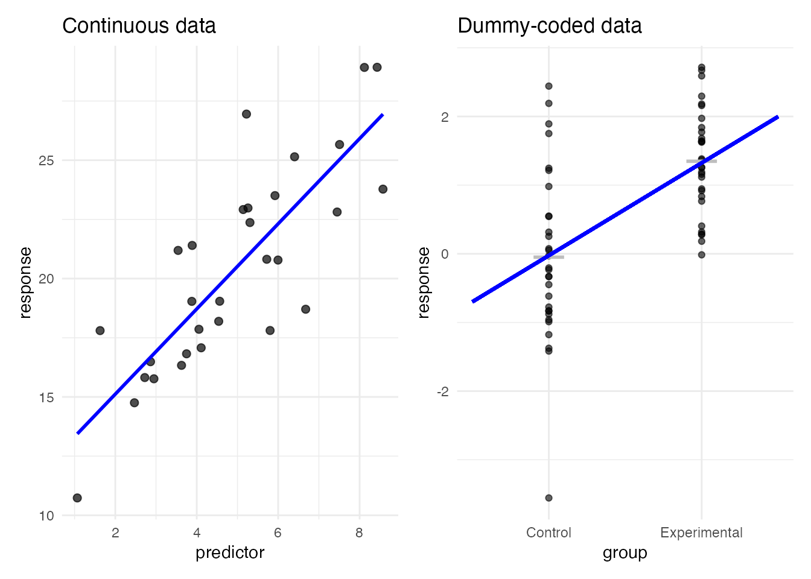
14 Extensions of the Linear Model
This chapter develops the linear model — a model expressing the relationship between explanatory and response variables as a linear (first-order) function. The natural progression is from the general linear model (LM) to the generalised linear model (GLM), then to the generalised linear mixed model (GLMM), and finally to the hierarchical linear model (HLM). We begin with the general linear model.
14.1 The general linear model
The foundation is regression. A simple regression is
\[ y_i = \beta_0 + \beta_1 x_i + e_i, \]
where \(y_i\) is the \(i\)-th observation, \(\beta_0\) the intercept, \(\beta_1\) the regression coefficient, and \(e_i\) the error. The extension to multiple regression is
\[ y_i = \beta_0 + \beta_1 x_{1i} + \beta_2 x_{2i} + \cdots + \beta_p x_{pi} + e_i, \]
with predictors \(x_1, \ldots, x_p\) and coefficients \(\beta_1, \ldots, \beta_p\).
In vector/matrix form,
\[ y = X\beta + e, \]
where \(y\) is an \(n\)-vector, \(X\) is the \(n \times p\) design matrix, \(\beta\) is a \(p\)-vector, and \(e\) is an \(n\)-vector.
The design matrix stacks the explanatory-variable data:
\[ X = \begin{pmatrix} 1 & x_{11} & x_{12} & \cdots & x_{1p}\\ 1 & x_{21} & x_{22} & \cdots & x_{2p}\\ \vdots & \vdots & \vdots & \ddots & \vdots\\ 1 & x_{n1} & x_{n2} & \cdots & x_{np} \end{pmatrix}. \]
The first column is the constant 1 carrying the intercept; the remaining columns carry the predictors. The coefficient vector \(\beta = (\beta_0, \beta_1, \ldots, \beta_p)^T\) then multiplies in to produce the linear combinations.
When a predictor \(x\) takes only the values 0 and 1, it is a dummy variable. With a dummy predictor, the scatter plot looks unusual: only two values along the x-axis.
Fitting a regression line through this kind of plot produces a line through the two group means. Regression assumes errors normally distributed about \(\hat{y}\); for dummy-coded data this becomes “errors normally distributed about each group mean” — the very assumption of the two-sample \(t\)-test. The \(t\)-test for a mean difference and a regression with a nominal-scale predictor are thus mathematically the same. The unifying name is the general linear model.
14.2 The generalised linear model (GLM)
For a long time psychology relied on factorial designs analysed by NHST, designs engineered to fit a test of means, with the verdict determined by a \(p\)-value. NHST was thought to be independent of the data-generating mechanism, accessible to anyone with statistical software, and decidable by an “uncontaminated” number.
Setting aside the wider critique of that paradigm, the dominant practice was to reduce everything to a test of differences of normal means. Hence proportions, counts, and other data ill-suited to a normal model were forced into normality by log or angular transformations and then tested.
The normal distribution stretches over \((-\infty, +\infty)\), but proportions lie in \([0, 1]\) and counts in the non-negative integers; forcing a general linear model on such data is a serious violation of its assumptions.1
In response, statistical models built on distributions other than the normal were developed. These are the generalised linear models (GLMs).2
Most probability distributions have a location parameter and a scale parameter. A statistical model addresses the average behaviour, so we want the linear part to map to the location parameter — after a suitable algebraic rearrangement. We illustrate with the Bernoulli and Poisson families.
14.2.1 A linear model for the Bernoulli: logistic regression
The Bernoulli distribution models binary outcomes such as heads/tails. Its probability mass function is
\[ P(Y = y) = p^y (1 - p)^{1 - y}, \]
with success probability \(p \in [0, 1]\). Such data abound in practice — life vs. death, presence vs. absence of disease, correct vs. incorrect on a test. Running an ordinary linear regression on a binary outcome gives nonsensical predictions outside \([0, 1]\).
The fix is a link function that maps the linear predictor to a probability appropriately. For logistic regression the link is the logit:
\[ \text{logit}(p) = \log\left(\frac{p}{1 - p}\right) = \beta_0 + \beta_1 x. \]
Solve for \(p\). Let \(\eta = \beta_0 + \beta_1 x\):
\[ \log\left(\frac{p}{1 - p}\right) = \eta. \]
Exponentiate:
\[ \frac{p}{1 - p} = e^{\eta}. \]
Multiply by \((1 - p)\):
\[ p = (1 - p) e^{\eta}. \]
Expand:
\[ p = e^{\eta} - p e^{\eta}. \]
Gather \(p\):
\[ p + p e^{\eta} = e^{\eta}, \]
\[ p(1 + e^{\eta}) = e^{\eta}, \]
\[ p = \frac{e^{\eta}}{1 + e^{\eta}}. \]
Divide numerator and denominator by \(e^{\eta}\):
\[ p = \frac{1}{e^{-\eta} + 1} = \frac{1}{1 + e^{-\eta}}. \]
Substituting \(\eta = \beta_0 + \beta_1 x\) gives the logistic function (the inverse link):
\[ p = \frac{1}{1 + e^{-(\beta_0 + \beta_1 x)}}. \]
The Bernoulli model then becomes
\[ y \sim \text{Bernoulli}(p). \]
Simulate some data and compare a linear and a logistic fit:
pacman::p_load(tidyverse, patchwork)
# generate data
set.seed(17)
n <- 200
x <- runif(n, min = -10, max = 10)
beta_0 <- 1
beta_1 <- 2
p <- beta_0 + x * beta_1
prob <- 1 / (1 + exp(-p))
y <- rbinom(n, size = 1, prob = prob)
df_logistic <- data.frame(x = x, y = y)
# p1: ordinary linear regression
p1 <- ggplot(df_logistic, aes(x = x, y = y)) +
geom_point(alpha = 0.7, size = 2) +
geom_smooth(method = "lm", se = FALSE, color = "blue") +
theme_minimal() +
labs(x = "predictor", y = "response", title = "Linear regression")
# p2: logistic regression
p2 <- ggplot(df_logistic, aes(x = x, y = y)) +
geom_point(alpha = 0.7, size = 2) +
geom_smooth(method = "glm", method.args = list(family = "binomial"),
se = FALSE, color = "red") +
theme_minimal() +
labs(x = "predictor", y = "response", title = "Logistic regression")
p1 + p2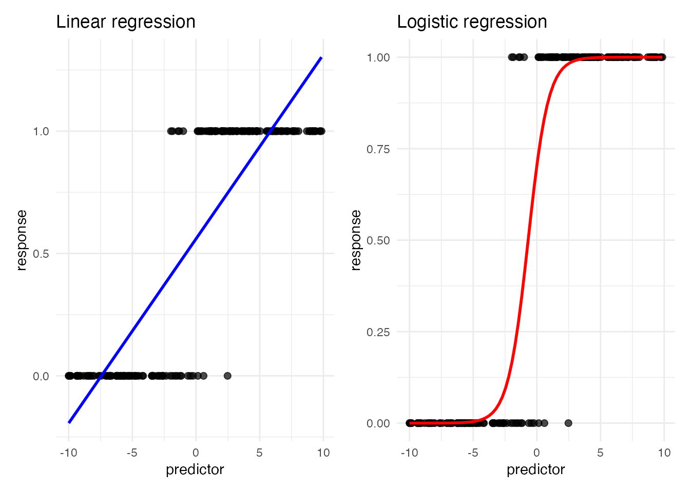
The linear regression extrapolates predictions outside the valid range; the logistic regression fits cleanly.
To fit a logistic regression from data one can use glm(), but here we use the Bayesian brms interface. brm()’s formula syntax mirrors glm()’s; the only conceptual change is from MLE to Bayes.
pacman::p_load(brms)
# fix brms's backend to cmdstanr (avoiding rstan)
options(brms.backend = "cmdstanr")
result.bayes.logistic <- brm(
y ~ x,
family = bernoulli(),
data = df_logistic,
seed = 12345,
chains = 4, cores = 4, backend = "cmdstanr",
iter = 2000, warmup = 1000,
refresh = 0
)Running MCMC with 4 parallel chains...
Chain 1 finished in 0.0 seconds.
Chain 2 finished in 0.0 seconds.
Chain 3 finished in 0.0 seconds.
Chain 4 finished in 0.0 seconds.
All 4 chains finished successfully.
Mean chain execution time: 0.0 seconds.
Total execution time: 0.2 seconds.summary(result.bayes.logistic) Family: bernoulli
Links: mu = logit
Formula: y ~ x
Data: df_logistic (Number of observations: 200)
Draws: 4 chains, each with iter = 2000; warmup = 1000; thin = 1;
total post-warmup draws = 4000
Regression Coefficients:
Estimate Est.Error l-95% CI u-95% CI Rhat Bulk_ESS Tail_ESS
Intercept 0.88 0.41 0.10 1.70 1.00 2314 2331
x 1.35 0.26 0.91 1.92 1.00 2164 2080
Draws were sampled using sample(hmc). For each parameter, Bulk_ESS
and Tail_ESS are effective sample size measures, and Rhat is the potential
scale reduction factor on split chains (at convergence, Rhat = 1).plot(result.bayes.logistic)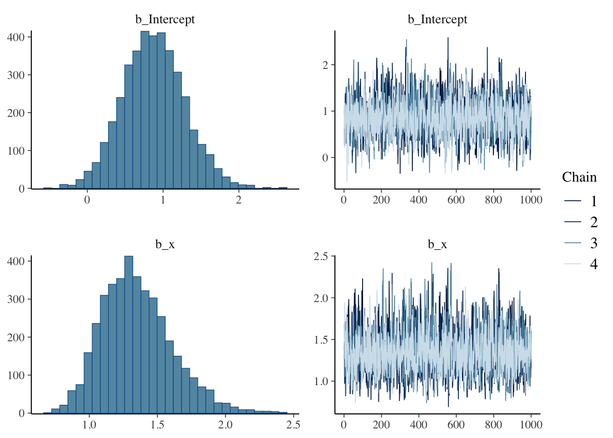
## ML comparison
result.ml <- glm(y ~ x, family = binomial(), data = df_logistic)
summary(result.ml)
Call:
glm(formula = y ~ x, family = binomial(), data = df_logistic)
Coefficients:
Estimate Std. Error z value Pr(>|z|)
(Intercept) 0.8673 0.4058 2.137 0.0326 *
x 1.2661 0.2413 5.248 1.54e-07 ***
---
Signif. codes: 0 '***' 0.001 '**' 0.01 '*' 0.05 '.' 0.1 ' ' 1
(Dispersion parameter for binomial family taken to be 1)
Null deviance: 273.869 on 199 degrees of freedom
Residual deviance: 45.112 on 198 degrees of freedom
AIC: 49.112
Number of Fisher Scoring iterations: 8The MLE and Bayesian estimates differ slightly because of the small sample size. With a binary outcome, the available variance is necessarily small, and accurate estimation requires more data.
Interpreting the coefficients also takes some care. In ordinary regression, a coefficient is “change in \(y\) per unit change in \(x\)”; in logistic regression that direct interpretation does not work, because the logistic function intervenes.
The linear model expresses
\[ \beta_0 + \beta_1 x = \log \frac{p}{1 - p}. \]
The right-hand side \(\log\{p/(1-p)\}\) is the logit. Logistic regression uses the logit to make the relationship linear. Conversely, the linear model captures the log of the odds, with the odds determined by the linear combination of predictors. To interpret a coefficient, exponentiate it and read the result as an odds ratio.
In our data the estimated slope is 1.36, so \(e^{1.36} = 3.89\): a one-unit increase in the predictor multiplies the odds of success by 3.89.
14.2.2 A linear model for the Poisson: Poisson regression
Now consider count data — non-negative integers — for which the Poisson is natural. The probability mass function is
\[ P(Y = y) = \frac{\lambda^y e^{-\lambda}}{y!}, \]
with \(\lambda\) both the mean and the variance. The shape of the Poisson:
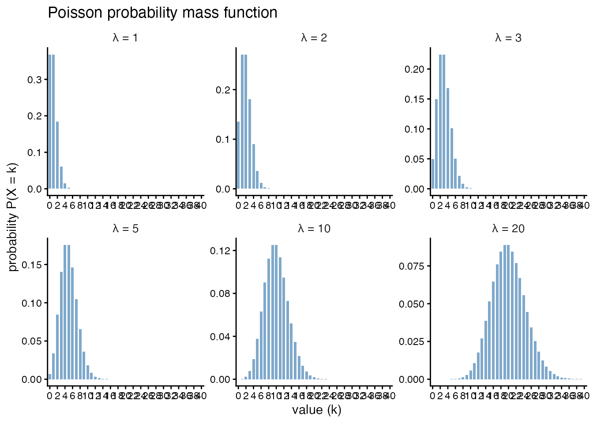
For non-negative-integer data, Poisson regression is preferred. The link is the logarithm:
\[ \log(\lambda_i) = \beta_0 + \beta_1 x_i, \]
with inverse link the exponential:
\[ \lambda_i = \exp(\beta_0 + \beta_1 x_i), \]
and the model is
\[ y_i \sim \text{Poisson}(\lambda_i). \]
A simulated example:
# generate data
set.seed(17)
n <- 200
x <- runif(n, min = 0, max = 10)
beta_0 <- 0.5
beta_1 <- 0.3
lambda <- exp(beta_0 + beta_1 * x)
y <- rpois(n, lambda = lambda)
df_pois <- data.frame(x = x, y = y)
# p1: linear regression (inappropriate)
p1 <- ggplot(df_pois, aes(x = x, y = y)) +
geom_point(alpha = 0.7, size = 2) +
geom_smooth(method = "lm", se = FALSE, color = "blue") +
theme_minimal() +
labs(x = "predictor", y = "count", title = "Linear regression (inappropriate)")
# p2: Poisson regression (appropriate)
p2 <- ggplot(df_pois, aes(x = x, y = y)) +
geom_point(alpha = 0.7, size = 2) +
geom_smooth(method = "glm", method.args = list(family = "poisson"),
se = FALSE, color = "red") +
theme_minimal() +
labs(x = "predictor", y = "count", title = "Poisson regression (appropriate)")
p1 + p2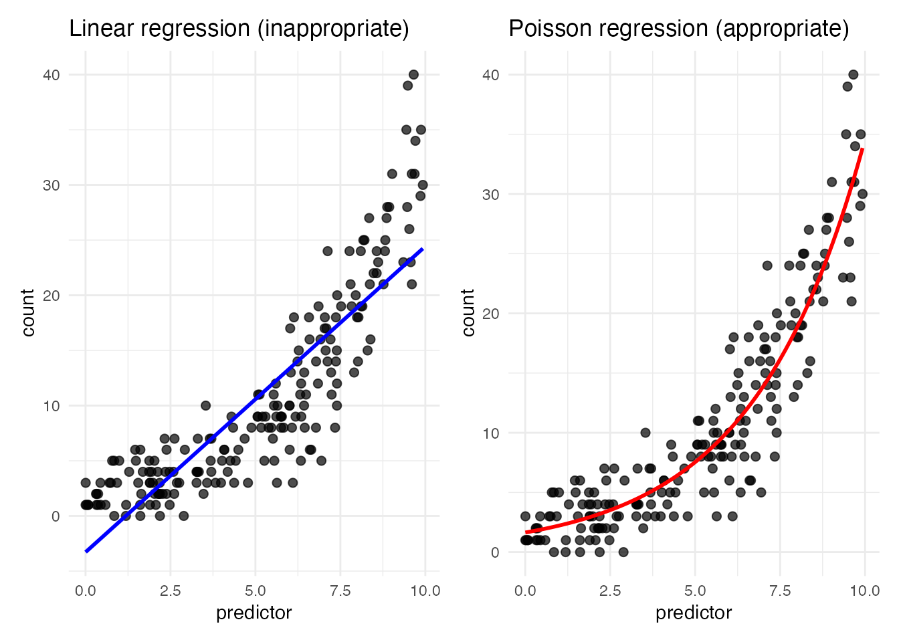
Linear regression could produce negative predictions; Poisson regression, via the exponential link, respects the count-data property.
To fit:
result.bayes.pois <- brm(
y ~ x,
family = poisson(),
data = df_pois,
seed = 12345,
chains = 4, cores = 4, backend = "cmdstanr",
iter = 2000, warmup = 1000,
refresh = 0
)Running MCMC with 4 parallel chains...
Chain 1 finished in 0.0 seconds.
Chain 2 finished in 0.0 seconds.
Chain 3 finished in 0.0 seconds.
Chain 4 finished in 0.0 seconds.
All 4 chains finished successfully.
Mean chain execution time: 0.0 seconds.
Total execution time: 0.2 seconds.summary(result.bayes.pois) Family: poisson
Links: mu = log
Formula: y ~ x
Data: df_pois (Number of observations: 200)
Draws: 4 chains, each with iter = 2000; warmup = 1000; thin = 1;
total post-warmup draws = 4000
Regression Coefficients:
Estimate Est.Error l-95% CI u-95% CI Rhat Bulk_ESS Tail_ESS
Intercept 0.49 0.07 0.36 0.63 1.00 1275 1675
x 0.30 0.01 0.29 0.32 1.00 1471 1943
Draws were sampled using sample(hmc). For each parameter, Bulk_ESS
and Tail_ESS are effective sample size measures, and Rhat is the potential
scale reduction factor on split chains (at convergence, Rhat = 1).plot(result.bayes.pois)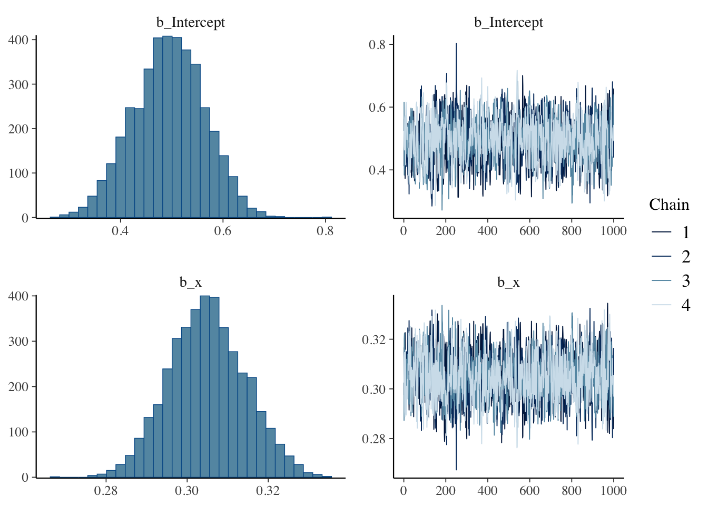
## ML comparison
result.ml.pois <- glm(y ~ x, family = poisson(), data = df_pois)
summary(result.ml.pois)
Call:
glm(formula = y ~ x, family = poisson(), data = df_pois)
Coefficients:
Estimate Std. Error z value Pr(>|z|)
(Intercept) 0.495962 0.071166 6.969 3.19e-12 ***
x 0.304829 0.009555 31.902 < 2e-16 ***
---
Signif. codes: 0 '***' 0.001 '**' 0.01 '*' 0.05 '.' 0.1 ' ' 1
(Dispersion parameter for poisson family taken to be 1)
Null deviance: 1457.6 on 199 degrees of freedom
Residual deviance: 214.3 on 198 degrees of freedom
AIC: 975.04
Number of Fisher Scoring iterations: 414.3 The generalised linear mixed model (GLMM)
A further extension is the generalised linear mixed model (GLMM). Up to now the regression models we considered have assumed that a predictor exerts a uniform effect across all units. Those effects are called fixed effects. GLMMs add random effects to the model.
A random effect captures the idea that a predictor’s effect varies across individuals. A within-subjects factorial design, for example, controls for individual differences; this can be cast as a model in which the variation of interest is the within-subjects main effect, while individual differences in average level are absorbed into a random intercept for each person.
We assume that these individual differences come from a probability distribution, typically normal. Individual differences arise as random draws, and individuals are taken to be exchangeable. The spread of those differences is the variance of the random effect. Since these individual-difference distributions are mixed into the model alongside the residual distribution, the model is called a mixed model.
14.3.1 Mixing in individual-difference distributions
Compare the between- and within-subjects ANOVA decompositions. For one factor in a between-subjects design, \[ SS_T = SS_A + SS_e, \]
with total sum of squares \(SS_T\) split into the factor-A effect and the error. For a within-subjects design,
\[SS_T = SS_A + SS_s + SS_e,\]
with an additional individual-difference term \(SS_s\). The test compares the effect to the error,3 so for the same effect a within-subjects design is more sensitive; in a between-subjects design the individual differences are mixed into the error and cannot be removed, whereas the within-subjects design isolates them.
At the level of individual observations, the between-subjects model is
\[ Y_{ij} = \beta_0 + \beta_1 x_{ij} + e_{ij}, \]
while the within-subjects model is
\[ Y_{ij} = \mu + \beta_{0i} + \beta_1 x_{ij} + e_{ij}, \]
with \(\mu\) the grand mean and \(\beta_{0i}\) the deviation of individual \(i\)’s mean from the grand mean — i.e., the individual difference. With repeated measures on each individual we can compute an individual mean and extract the relative intercept shift as that individual’s effect.
Cast as random variables, \[e_{ij} \sim N(0, \sigma_e),\] \[\beta_{0i} \sim N(0, \sigma_s),\]
so two probability distributions are mixed into the model for each observation.
We have illustrated individual differences as variation in intercepts; one may equally consider variation in slopes. Depending on where the random effect lives, we speak of random-intercept, random-slope, or random-intercept random-slope models.
14.3.2 Random-intercept model
In a random-intercept model the intercept varies across individuals. Treating the per-individual intercept as a random draw from a normal:
\[ \beta_{0i} = \beta_0 + u_{0i}, \quad u_{0i} \sim N(0, \sigma_u). \]
The full model is
\[ y_{ij} = (\beta_0 + u_{0i}) + \beta_1 x_{ij} + e_{ij}, \]
with \(e_{ij}\) the residual for individual \(i\)’s \(j\)-th observation.
A concrete example:
set.seed(17)
n_person <- 10
n_obs <- 20
beta_0 <- 1
beta_1 <- 2
sigma_u <- 1
sigma_e <- 0.5
person_intercepts <- rnorm(n_person, mean = 0, sd = sigma_u)
df_random_intercept <- expand_grid(
person = 1:n_person,
obs = 1:n_obs
) %>%
mutate(
x = runif(n(), min = 0, max = 10),
u_0 = person_intercepts[person],
y = beta_0 + u_0 + beta_1 * x + rnorm(n(), mean = 0, sd = sigma_e),
person_factor = factor(person)
)
df_random_intercept %>% head()# A tibble: 6 × 6
person obs x u_0 y person_factor
<int> <int> <dbl> <dbl> <dbl> <fct>
1 1 1 8.81 -1.02 17.0 1
2 1 2 6.07 -1.02 11.5 1
3 1 3 7.40 -1.02 15.4 1
4 1 4 8.03 -1.02 16.9 1
5 1 5 9.02 -1.02 18.3 1
6 1 6 0.927 -1.02 2.00 1 # p1: ordinary linear regression (one line for all)
p1 <- ggplot(df_random_intercept, aes(x = x, y = y)) +
geom_point(alpha = 0.5, size = 1) +
geom_smooth(method = "lm", se = FALSE, color = "blue", linewidth = 1.2) +
theme_minimal() +
labs(x = "predictor", y = "response",
title = "Linear regression (fixed effects only)")
# p2: random-intercept model (per-person intercepts)
p2 <- ggplot(df_random_intercept, aes(x = x, y = y, color = person_factor)) +
geom_point(alpha = 0.6, size = 1) +
geom_smooth(method = "lm", se = FALSE, linewidth = 0.8) +
theme_minimal() +
labs(x = "predictor", y = "response", title = "Random-intercept model") +
theme(legend.position = "none")
p1 + p2
Estimation:
result.bayes.random_intercept <- brm(
y ~ x + (1 | person),
family = gaussian(),
data = df_random_intercept,
seed = 12345,
chains = 4, cores = 4, backend = "cmdstanr",
iter = 2000, warmup = 1000,
refresh = 0
)Running MCMC with 4 parallel chains...
Chain 1 finished in 0.5 seconds.
Chain 3 finished in 0.4 seconds.
Chain 2 finished in 0.5 seconds.
Chain 4 finished in 0.5 seconds.
All 4 chains finished successfully.
Mean chain execution time: 0.5 seconds.
Total execution time: 0.6 seconds.summary(result.bayes.random_intercept) Family: gaussian
Links: mu = identity
Formula: y ~ x + (1 | person)
Data: df_random_intercept (Number of observations: 200)
Draws: 4 chains, each with iter = 2000; warmup = 1000; thin = 1;
total post-warmup draws = 4000
Multilevel Hyperparameters:
~person (Number of levels: 10)
Estimate Est.Error l-95% CI u-95% CI Rhat Bulk_ESS Tail_ESS
sd(Intercept) 1.01 0.30 0.60 1.73 1.01 408 786
Regression Coefficients:
Estimate Est.Error l-95% CI u-95% CI Rhat Bulk_ESS Tail_ESS
Intercept 1.29 0.35 0.61 2.01 1.01 620 461
x 1.98 0.01 1.96 2.01 1.00 2380 2052
Further Distributional Parameters:
Estimate Est.Error l-95% CI u-95% CI Rhat Bulk_ESS Tail_ESS
sigma 0.53 0.03 0.48 0.59 1.00 1790 2245
Draws were sampled using sample(hmc). For each parameter, Bulk_ESS
and Tail_ESS are effective sample size measures, and Rhat is the potential
scale reduction factor on split chains (at convergence, Rhat = 1).plot(result.bayes.random_intercept)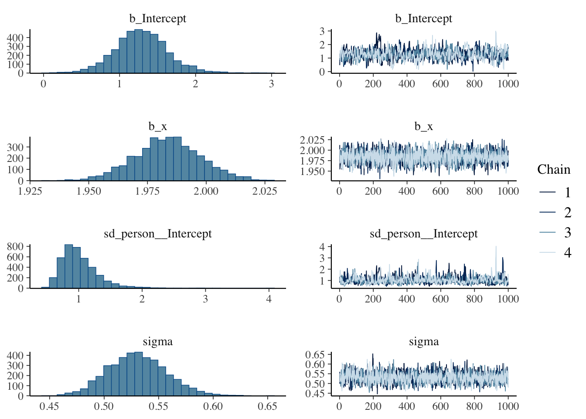
## ML comparison
pacman::p_load(lmerTest)
result.ml.random_intercept <- lmer(y ~ x + (1 | person), data = df_random_intercept)
summary(result.ml.random_intercept)Linear mixed model fit by REML. t-tests use Satterthwaite's method [
lmerModLmerTest]
Formula: y ~ x + (1 | person)
Data: df_random_intercept
REML criterion at convergence: 356.6
Scaled residuals:
Min 1Q Median 3Q Max
-3.3167 -0.5745 -0.1189 0.6343 2.6464
Random effects:
Groups Name Variance Std.Dev.
person (Intercept) 0.7462 0.8638
Residual 0.2773 0.5266
Number of obs: 200, groups: person, 10
Fixed effects:
Estimate Std. Error df t value Pr(>|t|)
(Intercept) 1.26699 0.28414 10.15076 4.459 0.00117 **
x 1.98396 0.01361 189.35597 145.774 < 2e-16 ***
---
Signif. codes: 0 '***' 0.001 '**' 0.01 '*' 0.05 '.' 0.1 ' ' 1
Correlation of Fixed Effects:
(Intr)
x -0.242## also fit an ordinary regression for comparison
result.ml.random_intercept.ordinal <- lm(y ~ x, data = df_random_intercept)
summary(result.ml.random_intercept.ordinal)
Call:
lm(formula = y ~ x, data = df_random_intercept)
Residuals:
Min 1Q Median 3Q Max
-2.27275 -0.59838 0.08193 0.50855 2.67596
Coefficients:
Estimate Std. Error t value Pr(>|t|)
(Intercept) 1.31764 0.14235 9.256 <2e-16 ***
x 1.97394 0.02464 80.124 <2e-16 ***
---
Signif. codes: 0 '***' 0.001 '**' 0.01 '*' 0.05 '.' 0.1 ' ' 1
Residual standard error: 0.9771 on 198 degrees of freedom
Multiple R-squared: 0.9701, Adjusted R-squared: 0.9699
F-statistic: 6420 on 1 and 198 DF, p-value: < 2.2e-16The random-effects notation (1 | person) says that intercepts vary by person. The 1 denotes the intercept, person the grouping variable.
The simulated SDs were \(\sigma_u =\) 1 and \(\sigma_e =\) 0.5. Bayesian estimation returns 1.012 and 0.53 respectively; MLE returns 0.864 and 0.527. Both methods land near the truth.
The fixed-effects-only regression returns an intercept of 1.318 and a slope of 1.974. The slope is the same, but the intercept estimate differs because the model does not accommodate the variability across persons. The fixed-effects-only model estimates only the mean of the normal-distributed intercepts — analogous to analysing a within-subjects design as if it were between-subjects, throwing away the very individual differences that the within-subjects design isolates.
14.3.2.1 Per-individual estimates
A benefit of Bayesian estimation is that we can quantify per-individual estimates and their uncertainty. Below we extract the MCMC samples for each individual’s random effect and visualise the posteriors.
brms::ranef() will do this directly, but extracting and shaping the MCMC samples ourselves is a useful exercise in understanding MCMC-based inference.
# per-individual random effects
random_effects <- ranef(result.bayes.random_intercept)
print(random_effects)$person
, , Intercept
Estimate Est.Error Q2.5 Q97.5
1 -1.2842573 0.3604082 -2.0328410 -0.6093268
2 -0.2815002 0.3612608 -1.0005543 0.4143774
3 -0.4328320 0.3614324 -1.1734025 0.2534430
4 -1.0881607 0.3642192 -1.8473431 -0.4056352
5 0.5388313 0.3636371 -0.2012680 1.2376421
6 -0.2689177 0.3633187 -1.0316210 0.4175833
7 0.5917790 0.3634519 -0.1563298 1.3063219
8 1.6501281 0.3597518 0.9219949 2.3568713
9 0.1666085 0.3624218 -0.5813913 0.8600218
10 0.2276495 0.3628401 -0.5134036 0.9184449# extract the per-individual intercept posterior samples
posterior_samples <- as_draws_df(result.bayes.random_intercept) %>%
select(starts_with("r_person")) %>%
rowid_to_column("iter") %>%
pivot_longer(-iter) %>%
mutate(person = str_extract(name, pattern = "\\d+")) %>%
mutate(person = factor(person, levels = as.character(1:10))) %>%
select(-name)Warning: Dropping 'draws_df' class as required metadata was removed.# summary statistics from the MCMC samples
posterior_samples %>%
group_by(person) %>%
summarise(
EAP = mean(value),
median = quantile(value, 0.5),
q025 = quantile(value, 0.025),
q975 = quantile(value, 0.975),
sd = sd(value),
.groups = "drop"
)# A tibble: 10 × 6
person EAP median q025 q975 sd
<fct> <dbl> <dbl> <dbl> <dbl> <dbl>
1 1 -1.28 -1.28 -2.03 -0.609 0.360
2 2 -0.282 -0.273 -1.00 0.414 0.361
3 3 -0.433 -0.425 -1.17 0.253 0.361
4 4 -1.09 -1.08 -1.85 -0.406 0.364
5 5 0.539 0.545 -0.201 1.24 0.364
6 6 -0.269 -0.270 -1.03 0.418 0.363
7 7 0.592 0.593 -0.156 1.31 0.363
8 8 1.65 1.66 0.922 2.36 0.360
9 9 0.167 0.171 -0.581 0.860 0.362
10 10 0.228 0.235 -0.513 0.918 0.363# posterior density plot
p1 <- ggplot(posterior_samples, aes(x = value, fill = person)) +
geom_density(alpha = 0.7) +
facet_wrap(~person, scales = "free_y") +
theme_minimal() +
labs(x = "intercept random effect", y = "posterior density",
title = "Posterior distribution of per-individual intercept random effects") +
theme(legend.position = "none")
print(p1)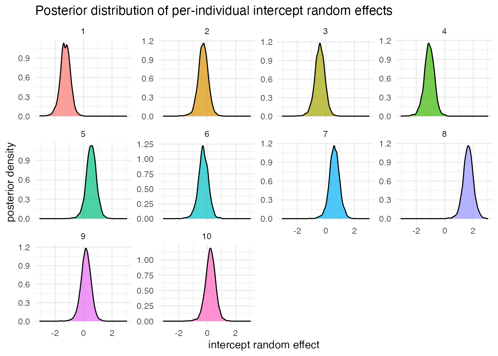
The effect extracted here is the deviation from the grand intercept; the actual per-individual intercept is fixed effect + random effect. coef(), or further processing of the MCMC samples, gives the absolute per-individual intercepts.
# per-individual total intercept (fixed + random)
individual_coefs <- coef(result.bayes.random_intercept)$person
total_intercept_samples <- as_draws_df(result.bayes.random_intercept) %>%
select(b_Intercept, starts_with("r_person")) %>%
rowid_to_column("iter") %>%
pivot_longer(-c(iter, b_Intercept)) %>%
mutate(person = str_extract(name, pattern = "\\d+")) %>%
mutate(person = factor(person, levels = as.character(1:10))) %>%
mutate(total_intercept = b_Intercept + value) %>%
select(iter, person, total_intercept)Warning: Dropping 'draws_df' class as required metadata was removed.p2 <- ggplot(total_intercept_samples, aes(x = total_intercept, fill = person)) +
geom_density(alpha = 0.7) +
facet_wrap(~person, scales = "free_y") +
theme_minimal() +
labs(
x = "absolute intercept (fixed + random)", y = "posterior density",
title = "Posterior distribution of per-individual absolute intercepts"
) +
theme(legend.position = "none")
print(p2)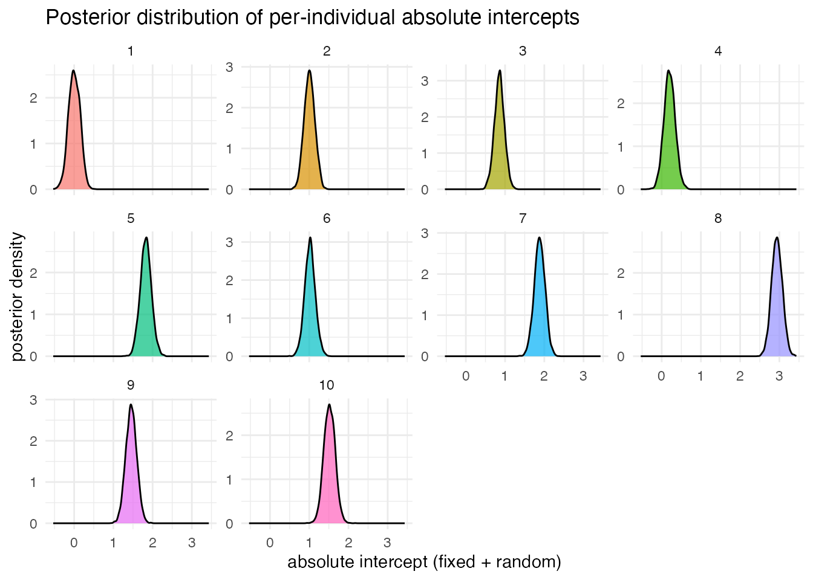
# credible intervals for the absolute intercepts
total_intercept_summary <- total_intercept_samples %>%
group_by(person) %>%
summarise(
EAP = mean(total_intercept),
median = quantile(total_intercept, 0.5),
q025 = quantile(total_intercept, 0.025),
q975 = quantile(total_intercept, 0.975),
sd = sd(total_intercept),
.groups = "drop"
)
print(total_intercept_summary)# A tibble: 10 × 6
person EAP median q025 q975 sd
<fct> <dbl> <dbl> <dbl> <dbl> <dbl>
1 1 0.00382 0.00210 -0.284 0.279 0.146
2 2 1.01 1.01 0.746 1.27 0.135
3 3 0.855 0.857 0.597 1.10 0.128
4 4 0.200 0.197 -0.0805 0.484 0.143
5 5 1.83 1.83 1.55 2.11 0.142
6 6 1.02 1.02 0.753 1.29 0.136
7 7 1.88 1.88 1.61 2.14 0.137
8 8 2.94 2.94 2.67 3.21 0.137
9 9 1.45 1.45 1.18 1.73 0.139
10 10 1.52 1.52 1.24 1.80 0.144With Bayesian estimation, per-individual estimates and their uncertainty can be analysed in detail.
14.3.3 Random-slope model
A random-slope model lets the slope vary across individuals:
\[ \beta_{1i} = \beta_1 + u_{1i}, \quad u_{1i} \sim N(0, \sigma_u). \]
The full model is
\[ y_{ij} = \beta_0 + (\beta_1 + u_{1i}) x_{ij} + e_{ij}. \]
Simulate and visualise:
set.seed(17)
n_person <- 10
n_obs <- 20
beta_0 <- 1
beta_1 <- 2
sigma_u <- 0.5
sigma_e <- 1.5
person_slopes <- rnorm(n_person, mean = 0, sd = sigma_u)
df_random_slope <- expand_grid(
person = 1:n_person,
obs = 1:n_obs
) %>%
mutate(
x = runif(n(), min = 0, max = 10),
u_1 = person_slopes[person],
y = beta_0 + (beta_1 + u_1) * x + rnorm(n(), mean = 0, sd = sigma_e),
person_factor = factor(person)
)
df_random_slope %>% head()# A tibble: 6 × 6
person obs x u_1 y person_factor
<int> <int> <dbl> <dbl> <dbl> <fct>
1 1 1 8.81 -0.508 12.5 1
2 1 2 6.07 -0.508 8.12 1
3 1 3 7.40 -0.508 13.9 1
4 1 4 8.03 -0.508 15.5 1
5 1 5 9.02 -0.508 15.2 1
6 1 6 0.927 -0.508 2.88 1 p1 <- ggplot(df_random_slope, aes(x = x, y = y)) +
geom_point(alpha = 0.5, size = 1) +
geom_smooth(method = "lm", se = FALSE, color = "blue", linewidth = 1.2) +
theme_minimal() +
labs(x = "predictor", y = "response",
title = "Linear regression (fixed effects only)")
p2 <- ggplot(df_random_slope, aes(x = x, y = y, color = person_factor)) +
geom_point(alpha = 0.6, size = 1) +
geom_smooth(method = "lm", se = FALSE, linewidth = 0.8) +
theme_minimal() +
labs(x = "predictor", y = "response", title = "Random-slope model") +
theme(legend.position = "none")
p1 + p2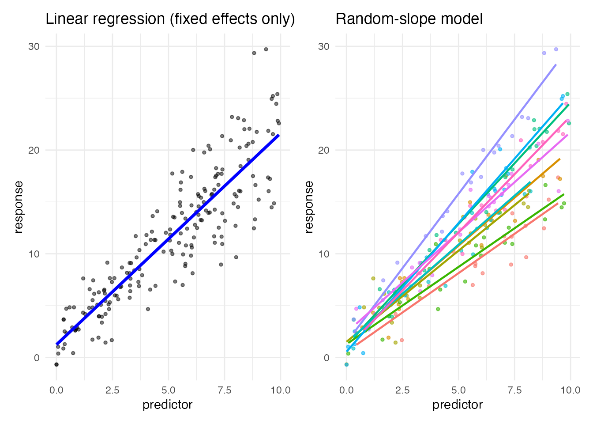
Per-individual slopes differ — the predictor’s effect varies across individuals.
To fit:
result.bayes.random_slope <- brm(
y ~ x + (0 + x | person),
family = gaussian(),
data = df_random_slope,
seed = 12345,
chains = 4, cores = 4, backend = "cmdstanr",
iter = 2000, warmup = 1000,
refresh = 0
)Running MCMC with 4 parallel chains...
Chain 1 finished in 0.4 seconds.
Chain 2 finished in 0.5 seconds.
Chain 3 finished in 0.4 seconds.
Chain 4 finished in 0.4 seconds.
All 4 chains finished successfully.
Mean chain execution time: 0.4 seconds.
Total execution time: 0.5 seconds.summary(result.bayes.random_slope) Family: gaussian
Links: mu = identity
Formula: y ~ x + (0 + x | person)
Data: df_random_slope (Number of observations: 200)
Draws: 4 chains, each with iter = 2000; warmup = 1000; thin = 1;
total post-warmup draws = 4000
Multilevel Hyperparameters:
~person (Number of levels: 10)
Estimate Est.Error l-95% CI u-95% CI Rhat Bulk_ESS Tail_ESS
sd(x) 0.51 0.15 0.30 0.86 1.00 527 1003
Regression Coefficients:
Estimate Est.Error l-95% CI u-95% CI Rhat Bulk_ESS Tail_ESS
Intercept 1.24 0.24 0.79 1.71 1.00 5674 3203
x 2.04 0.16 1.73 2.36 1.00 605 743
Further Distributional Parameters:
Estimate Est.Error l-95% CI u-95% CI Rhat Bulk_ESS Tail_ESS
sigma 1.60 0.08 1.45 1.76 1.00 1642 1684
Draws were sampled using sample(hmc). For each parameter, Bulk_ESS
and Tail_ESS are effective sample size measures, and Rhat is the potential
scale reduction factor on split chains (at convergence, Rhat = 1).plot(result.bayes.random_slope)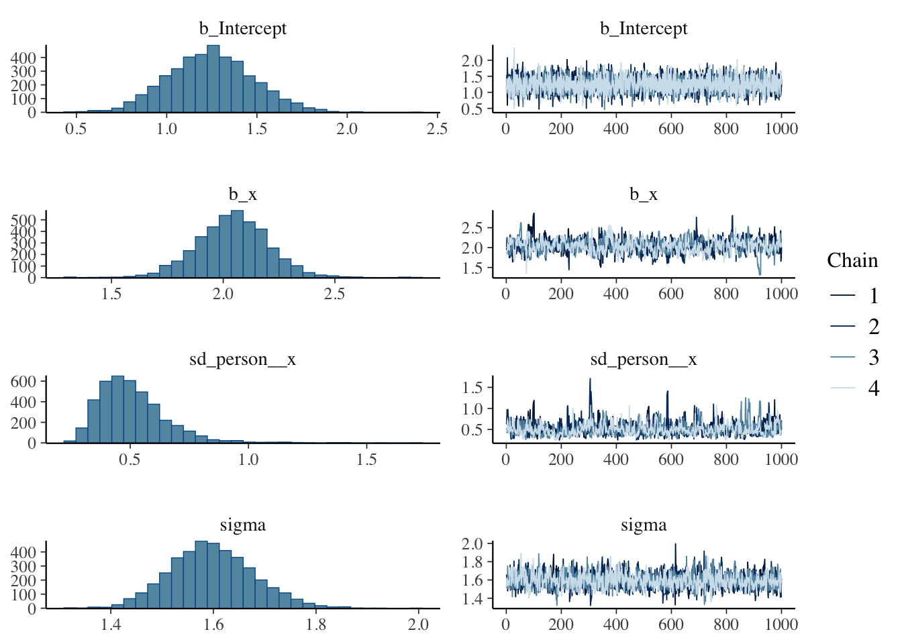
## ML comparison
result.ml.random_slope <- lmer(y ~ x + (0 + x | person), data = df_random_slope)
summary(result.ml.random_slope)Linear mixed model fit by REML. t-tests use Satterthwaite's method [
lmerModLmerTest]
Formula: y ~ x + (0 + x | person)
Data: df_random_slope
REML criterion at convergence: 792.3
Scaled residuals:
Min 1Q Median 3Q Max
-3.2526 -0.6127 -0.0716 0.6858 2.6584
Random effects:
Groups Name Variance Std.Dev.
person x 0.1894 0.4352
Residual 2.5139 1.5855
Number of obs: 200, groups: person, 10
Fixed effects:
Estimate Std. Error df t value Pr(>|t|)
(Intercept) 1.2415 0.2335 189.2290 5.317 2.96e-07 ***
x 2.0451 0.1436 10.2643 14.240 4.31e-08 ***
---
Signif. codes: 0 '***' 0.001 '**' 0.01 '*' 0.05 '.' 0.1 ' ' 1
Correlation of Fixed Effects:
(Intr)
x -0.250In the random-effects formula (0 + x | person), the 0 suppresses a random intercept and the x requests a random slope. Compare each output term to the theoretical quantities to confirm the correspondence.
As before, per-individual estimates and their distributions can be extracted via the relevant function or directly from the MCMC samples; try shaping the output yourself.
14.3.4 Random-intercept random-slope model
This is the most general of the variants here: both the intercept and the slope vary across individuals:
\[ \beta_{0i} = \beta_0 + u_{0i}, \] \[ \beta_{1i} = \beta_1 + u_{1i}. \]
Because both random effects belong to the same individual, they are assumed correlated; their joint distribution is bivariate normal, and the correlation is itself estimated:
\[ \begin{pmatrix} u_{0i} \\ u_{1i} \end{pmatrix} \sim MVN\left( \begin{pmatrix} 0 \\ 0 \end{pmatrix}, \begin{pmatrix} \sigma_{u0}^2 & \sigma_{u01} \\ \sigma_{u01} & \sigma_{u1}^2 \end{pmatrix} \right). \]
The full model:
\[ y_{ij} = (\beta_0 + u_{0i}) + (\beta_1 + u_{1i}) x_{ij} + e_{ij}. \]
set.seed(17)
n_person <- 10
n_obs <- 20
beta_0 <- 1
beta_1 <- 2
sigma_u0 <- 1.0
sigma_u1 <- 0.5
rho <- 0.3
sigma_e <- 0.5
Sigma <- matrix(
c(
sigma_u0^2, rho * sigma_u0 * sigma_u1,
rho * sigma_u0 * sigma_u1, sigma_u1^2
),
nrow = 2
)
pacman::p_load(MASS)
random_effects <- mvrnorm(n_person, mu = c(0, 0), Sigma = Sigma)
person_intercepts <- random_effects[, 1]
person_slopes <- random_effects[, 2]
df_random_both <- expand_grid(
person = 1:n_person,
obs = 1:n_obs
) %>%
mutate(
x = runif(n(), min = 0, max = 10),
u_0 = person_intercepts[person],
u_1 = person_slopes[person],
y = (beta_0 + u_0) + (beta_1 + u_1) * x + rnorm(n(), mean = 0, sd = sigma_e),
person_factor = factor(person, levels = as.character(1:10))
)
df_random_both %>% head()# A tibble: 6 × 7
person obs x u_0 u_1 y person_factor
<int> <int> <dbl> <dbl> <dbl> <dbl> <fct>
1 1 1 7.52 1.12 -0.351 15.2 1
2 1 2 6.34 1.12 -0.351 12.8 1
3 1 3 2.48 1.12 -0.351 6.12 1
4 1 4 5.51 1.12 -0.351 11.3 1
5 1 5 2.35 1.12 -0.351 5.18 1
6 1 6 2.59 1.12 -0.351 5.38 1 p1 <- ggplot(df_random_both, aes(x = x, y = y)) +
geom_point(alpha = 0.5, size = 1) +
geom_smooth(method = "lm", se = FALSE, color = "blue", linewidth = 1.2) +
theme_minimal() +
labs(x = "predictor", y = "response",
title = "Linear regression (fixed effects only)")
p2 <- ggplot(df_random_both, aes(x = x, y = y, color = person_factor)) +
geom_point(alpha = 0.6, size = 1) +
geom_smooth(method = "lm", se = FALSE, linewidth = 0.8) +
theme_minimal() +
labs(x = "predictor", y = "response",
title = "Random-intercept random-slope model") +
theme(legend.position = "none")
p1 + p2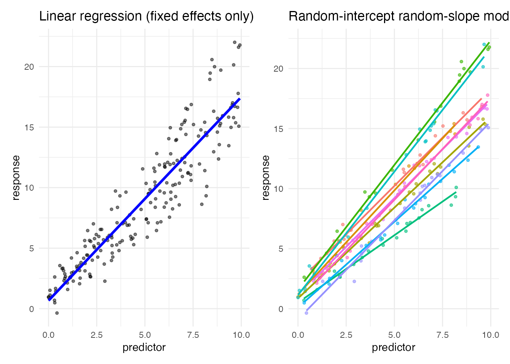
The fixed-effects-only plot suggests a single regression would do. The colour-coded plot shows the random-intercept random-slope model captures the structure more cleanly. Always visualise the data first.
To fit, both random effects go inside the formula parentheses:
result.bayes.random_both <- brm(
y ~ x + (1 + x | person),
family = gaussian(),
data = df_random_both,
seed = 12345,
chains = 4, cores = 4, backend = "cmdstanr",
iter = 2000, warmup = 1000,
refresh = 0
)Running MCMC with 4 parallel chains...
Chain 2 finished in 2.6 seconds.
Chain 3 finished in 2.6 seconds.
Chain 4 finished in 2.7 seconds.
Chain 1 finished in 2.8 seconds.
All 4 chains finished successfully.
Mean chain execution time: 2.7 seconds.
Total execution time: 2.9 seconds.summary(result.bayes.random_both)Warning: There were 7 divergent transitions after warmup. Increasing
adapt_delta above 0.8 may help. See
http://mc-stan.org/misc/warnings.html#divergent-transitions-after-warmup Family: gaussian
Links: mu = identity
Formula: y ~ x + (1 + x | person)
Data: df_random_both (Number of observations: 200)
Draws: 4 chains, each with iter = 2000; warmup = 1000; thin = 1;
total post-warmup draws = 4000
Multilevel Hyperparameters:
~person (Number of levels: 10)
Estimate Est.Error l-95% CI u-95% CI Rhat Bulk_ESS Tail_ESS
sd(Intercept) 0.96 0.29 0.55 1.70 1.00 1083 2237
sd(x) 0.34 0.10 0.20 0.59 1.00 1244 1640
cor(Intercept,x) 0.33 0.30 -0.34 0.80 1.00 1492 2408
Regression Coefficients:
Estimate Est.Error l-95% CI u-95% CI Rhat Bulk_ESS Tail_ESS
Intercept 0.83 0.33 0.14 1.47 1.00 1360 1763
x 1.65 0.11 1.43 1.89 1.00 1064 1454
Further Distributional Parameters:
Estimate Est.Error l-95% CI u-95% CI Rhat Bulk_ESS Tail_ESS
sigma 0.53 0.03 0.47 0.58 1.00 4200 2756
Draws were sampled using sample(hmc). For each parameter, Bulk_ESS
and Tail_ESS are effective sample size measures, and Rhat is the potential
scale reduction factor on split chains (at convergence, Rhat = 1).plot(result.bayes.random_both)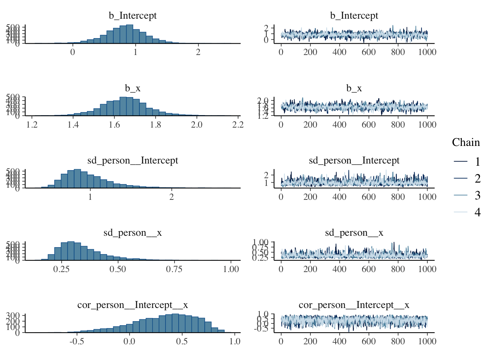
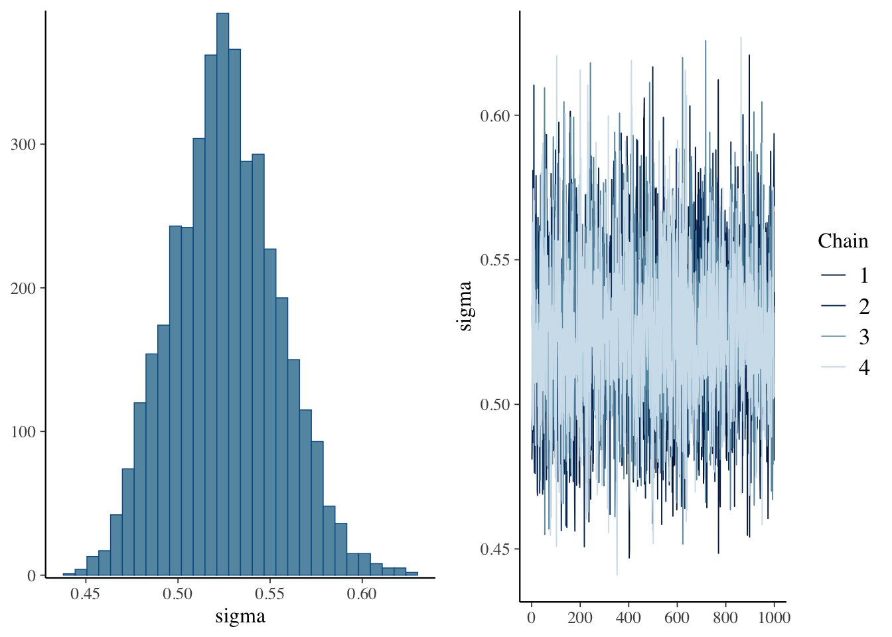
## ML comparison
result.ml.random_both <- lmer(y ~ x + (1 + x | person), data = df_random_both)
summary(result.ml.random_both)Linear mixed model fit by REML. t-tests use Satterthwaite's method [
lmerModLmerTest]
Formula: y ~ x + (1 + x | person)
Data: df_random_both
REML criterion at convergence: 385
Scaled residuals:
Min 1Q Median 3Q Max
-3.4362 -0.6324 -0.0689 0.5880 2.7101
Random effects:
Groups Name Variance Std.Dev. Corr
person (Intercept) 0.62433 0.7901
x 0.07568 0.2751 0.43
Residual 0.27260 0.5221
Number of obs: 200, groups: person, 10
Fixed effects:
Estimate Std. Error df t value Pr(>|t|)
(Intercept) 0.83552 0.26122 8.76380 3.199 0.0112 *
x 1.65027 0.08804 8.98000 18.745 1.65e-08 ***
---
Signif. codes: 0 '***' 0.001 '**' 0.01 '*' 0.05 '.' 0.1 ' ' 1
Correlation of Fixed Effects:
(Intr)
x 0.369 (1 + x | person) puts random effects on both intercept and slope: 1 for intercept, x for slope.
The model also estimates the correlation between intercept and slope. Check how well the simulated \(\rho =\) 0.3 is recovered. Per-individual estimates can be extracted as before.
14.4 Hierarchical linear models (HLMs)
The hierarchical linear model takes the mixing of distributions further. Treating individual differences as random effects already amounts to viewing the data as observations \(j\) nested within individuals \(i\) — Russian-doll fashion. That nested-data picture is the leading idea of HLMs.
HLMs handle hierarchically structured data. In studies of classroom-level educational effects, broader investigations move to comparisons across classrooms, then across schools, then districts, prefectures, and so on. Classrooms are nested in schools, schools in districts, districts in municipalities, municipalities in prefectures. We may equally well nest in the other direction: individuals within classrooms, types of task within individuals. The point is that each nesting level has its own distribution; elements at the same level are taken to be qualitatively equivalent and exchangeable. In a memory experiment, for example, when we say “memorise words of equivalent ‘meaninglessness’,” strings like “menuso” or “nukiha” are treated as exchangeable insofar as both are three-character nonsense syllables.
A further attractive feature of the HLM is the ability to model cross-level effects — for instance, a municipality-level variable (population) influencing classroom-level educational quality. Such cross-level relationships can be expressed (in principle).
Decisions about where to assume a level — and whether such a level even matters — should be made carefully. Excessively complex models are not useful, and the importance of grouping at a given level should be checked before fitting. The intraclass correlation coefficient (ICC) is the standard diagnostic.
14.4.1 A two-level HLM
The most basic HLM has two levels. Take students nested in classrooms as an example.
14.4.1.1 Level 1 (individual level)
For individual \(i\) (\(i = 1, 2, \ldots, n_j\)) in classroom \(j\) (\(j = 1, 2, \ldots, J\)),
\[ Y_{ij} = \beta_{0j} + \beta_{1j}X_{ij} + r_{ij}, \]
where:
- \(Y_{ij}\): student \(i\)’s achievement in classroom \(j\)
- \(X_{ij}\): a student-level predictor (e.g., study time)
- \(\beta_{0j}\): classroom \(j\)’s intercept (its average achievement)
- \(\beta_{1j}\): classroom \(j\)’s slope (its predictor effect)
- \(r_{ij}\): individual-level residual, \(r_{ij} \sim N(0, \sigma^2)\)
14.4.1.2 Level 2 (classroom level)
The level-1 coefficients are expressed as functions of classroom-level variables:
\[ \beta_{0j} = \gamma_{00} + \gamma_{01}W_j + u_{0j}, \]
\[ \beta_{1j} = \gamma_{10} + \gamma_{11}W_j + u_{1j}, \]
where:
- \(W_j\): a classroom-level predictor (e.g., class size)
- \(\gamma_{00}\): grand intercept (average achievement across all classrooms)
- \(\gamma_{01}\): effect of the classroom-level variable on the intercept
- \(\gamma_{10}\): grand slope (average effect across classrooms)
- \(\gamma_{11}\): cross-level interaction (effect of classroom variable on the slope)
- \(u_{0j}, u_{1j}\): classroom-level residuals (random effects)
Random effects are assumed multivariate normal:
\[ \begin{pmatrix} u_{0j} \\ u_{1j} \end{pmatrix} \sim MVN\left( \begin{pmatrix} 0 \\ 0 \end{pmatrix}, \begin{pmatrix} \tau_{00} & \tau_{01} \\ \tau_{01} & \tau_{11} \end{pmatrix} \right). \]
14.4.1.3 Combined model
Substituting level 2 into level 1:
\[ Y_{ij} = \gamma_{00} + \gamma_{01}W_j + \gamma_{10}X_{ij} + \gamma_{11}W_j X_{ij} + u_{0j} + u_{1j}X_{ij} + r_{ij}. \]
Decomposed:
Fixed effects
- \(\gamma_{00}\): grand intercept
- \(\gamma_{01}\): main effect of the classroom-level variable
- \(\gamma_{10}\): main effect of the individual-level variable
- \(\gamma_{11}\): cross-level interaction
Random effects
- \(u_{0j}\): classroom-level random effect on the intercept
- \(u_{1j}X_{ij}\): classroom-level random effect on the slope
- \(r_{ij}\): individual-level residual
14.4.1.4 Intraclass correlation coefficient (ICC)
To assess whether the hierarchy matters, compute the intraclass correlation coefficient, the correlation among observations in the same cluster:
\[ \text{ICC} = \frac{\tau_{00}}{\tau_{00} + \sigma^2}, \]
with \(\tau_{00}\) the between-group variance and \(\sigma^2\) the within-group variance.
An ICC near 0 indicates little need to model the hierarchy; a larger ICC (typically \(\geq 0.05\)) recommends a hierarchical model.
14.4.2 A picture of the model
A figure may clarify the equations. Read from the bottom up. The data \(Y_{ij}\) sit at the bottom, generated from a normal distribution. The spread \(\sigma_e^2\) of that distribution gives the individual-level residual \(r_{ij}\). The mean of that normal is given by a regression model whose coefficients are themselves drawn from a bivariate normal at the next level. The bivariate normal has its own means (the higher-level fixed effects), its own spreads, and a correlation \(\rho\) between intercept and slope. The intercept residual \(u_{0j}\) and slope residual \(u_{1j}\) have spreads \(\tau_{00}\) and \(\tau_{11}\), and their means are themselves given by regression on classroom-level variables. Since no information is available a priori about those classroom-level fixed effects, we use a non-informative (uniform) prior. The variance priors must be non-negative; truncated distributions are used, often heavy-tailed Cauchy or \(t\).
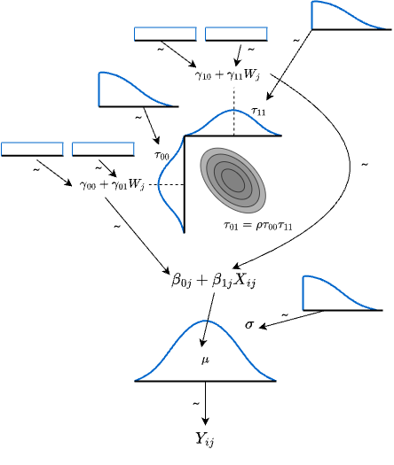
14.4.3 A worked example
A concrete application. We use the baseball data introduced earlier. The data contain player-level performance (height, weight, hits, etc.) together with team and position — a hierarchical structure.
A player belongs to a specific team and plays a specific position within that team — i.e., position is nested in team. Team-level features (tactics, coaching) are shared across players on the same team; within a team, similar physical and technical attributes are expected at each position. Ignoring this structure can inflate individual-difference variance and lead to faulty inference.
We restrict to the 2020 season and exclude pitchers (whose characteristics differ markedly from those of fielders), yielding a more homogeneous dataset.
First, the ICCs at team and team-by-position levels, using multilevel::ICC1:
pacman::p_load(tidyverse, brms, bayesplot, multilevel)
# pin brms's backend to cmdstanr
options(brms.backend = "cmdstanr")
dat <- read_csv("Baseball.csv") %>%
filter(Year == "2020年度") %>%
mutate(
position = as.factor(position)
) %>%
filter(position != "投手")Rows: 7944 Columns: 17
── Column specification ────────────────────────────────────────────────────────
Delimiter: ","
chr (6): Year, Name, team, bloodType, UniformNum, position
dbl (11): salary, height, weight, Games, AtBats, Hit, HR, Win, Lose, Save, Hold
ℹ Use `spec()` to retrieve the full column specification for this data.
ℹ Specify the column types or set `show_col_types = FALSE` to quiet this message.# team-level ICC
icc_team <- multilevel::ICC1(aov(Hit ~ team, data = dat))
# team-by-position ICC (nested)
dat$team_position <- paste(dat$team, dat$position, sep = "_")
icc_team_position <- multilevel::ICC1(aov(Hit ~ team_position, data = dat))
# position-only ICC (reference)
icc_position <- multilevel::ICC1(aov(Hit ~ position, data = dat))
print(paste("Team ICC1:", round(icc_team, 3)))[1] "Team ICC1: -0.031"print(paste("Team:Position ICC1:", round(icc_team_position, 3)))[1] "Team:Position ICC1: -0.029"print(paste("Position ICC1:", round(icc_position, 3)))[1] "Position ICC1: 0.046"The ICCs are negative — within-group variance exceeds between-group variance, meaning the grouping is not informative. A meaningfully positive ICC would be preferred.4 However, the team × position combination introduces within-group similarity, so we use it as the grouping variable for the fit.
We model hits (Hit) as a function of games played (Games) and player physique (height, weight), with team-by-position random intercepts. Hits are non-negative integers, so we use a Poisson family.
# Poisson model with nested random intercepts
model_hit <- brm(
Hit ~ Games + height + weight + (1 | team:position),
data = dat,
family = poisson(),
chains = 4,
iter = 10000,
cores = 4
)Start samplingRunning MCMC with 4 parallel chains...
Chain 1 Iteration: 1 / 10000 [ 0%] (Warmup)
Chain 1 Iteration: 100 / 10000 [ 1%] (Warmup)
Chain 1 Iteration: 200 / 10000 [ 2%] (Warmup)
Chain 2 Iteration: 1 / 10000 [ 0%] (Warmup)
Chain 2 Iteration: 100 / 10000 [ 1%] (Warmup)
Chain 4 Iteration: 1 / 10000 [ 0%] (Warmup)
Chain 4 Iteration: 100 / 10000 [ 1%] (Warmup)
Chain 3 Iteration: 1 / 10000 [ 0%] (Warmup)
Chain 3 Iteration: 100 / 10000 [ 1%] (Warmup)
Chain 2 Iteration: 200 / 10000 [ 2%] (Warmup)
Chain 1 Iteration: 300 / 10000 [ 3%] (Warmup)
Chain 4 Iteration: 200 / 10000 [ 2%] (Warmup)
Chain 3 Iteration: 200 / 10000 [ 2%] (Warmup)
Chain 4 Iteration: 300 / 10000 [ 3%] (Warmup)
Chain 2 Iteration: 300 / 10000 [ 3%] (Warmup)
Chain 4 Iteration: 400 / 10000 [ 4%] (Warmup)
Chain 2 Iteration: 400 / 10000 [ 4%] (Warmup)
Chain 3 Iteration: 300 / 10000 [ 3%] (Warmup)
Chain 4 Iteration: 500 / 10000 [ 5%] (Warmup)
Chain 2 Iteration: 500 / 10000 [ 5%] (Warmup)
Chain 4 Iteration: 600 / 10000 [ 6%] (Warmup)
Chain 2 Iteration: 600 / 10000 [ 6%] (Warmup)
Chain 3 Iteration: 400 / 10000 [ 4%] (Warmup)
Chain 4 Iteration: 700 / 10000 [ 7%] (Warmup)
Chain 2 Iteration: 700 / 10000 [ 7%] (Warmup)
Chain 3 Iteration: 500 / 10000 [ 5%] (Warmup)
Chain 4 Iteration: 800 / 10000 [ 8%] (Warmup)
Chain 1 Iteration: 400 / 10000 [ 4%] (Warmup)
Chain 2 Iteration: 800 / 10000 [ 8%] (Warmup)
Chain 3 Iteration: 600 / 10000 [ 6%] (Warmup)
Chain 4 Iteration: 900 / 10000 [ 9%] (Warmup)
Chain 2 Iteration: 900 / 10000 [ 9%] (Warmup)
Chain 4 Iteration: 1000 / 10000 [ 10%] (Warmup)
Chain 2 Iteration: 1000 / 10000 [ 10%] (Warmup)
Chain 3 Iteration: 700 / 10000 [ 7%] (Warmup)
Chain 3 Iteration: 800 / 10000 [ 8%] (Warmup)
Chain 4 Iteration: 1100 / 10000 [ 11%] (Warmup)
Chain 2 Iteration: 1100 / 10000 [ 11%] (Warmup)
Chain 2 Iteration: 1200 / 10000 [ 12%] (Warmup)
Chain 3 Iteration: 900 / 10000 [ 9%] (Warmup)
Chain 4 Iteration: 1200 / 10000 [ 12%] (Warmup)
Chain 2 Iteration: 1300 / 10000 [ 13%] (Warmup)
Chain 3 Iteration: 1000 / 10000 [ 10%] (Warmup)
Chain 4 Iteration: 1300 / 10000 [ 13%] (Warmup)
Chain 4 Iteration: 1400 / 10000 [ 14%] (Warmup)
Chain 2 Iteration: 1400 / 10000 [ 14%] (Warmup)
Chain 3 Iteration: 1100 / 10000 [ 11%] (Warmup)
Chain 4 Iteration: 1500 / 10000 [ 15%] (Warmup)
Chain 2 Iteration: 1500 / 10000 [ 15%] (Warmup)
Chain 2 Iteration: 1600 / 10000 [ 16%] (Warmup)
Chain 3 Iteration: 1200 / 10000 [ 12%] (Warmup)
Chain 3 Iteration: 1300 / 10000 [ 13%] (Warmup)
Chain 4 Iteration: 1600 / 10000 [ 16%] (Warmup)
Chain 4 Iteration: 1700 / 10000 [ 17%] (Warmup)
Chain 2 Iteration: 1700 / 10000 [ 17%] (Warmup)
Chain 3 Iteration: 1400 / 10000 [ 14%] (Warmup)
Chain 3 Iteration: 1500 / 10000 [ 15%] (Warmup)
Chain 4 Iteration: 1800 / 10000 [ 18%] (Warmup)
Chain 4 Iteration: 1900 / 10000 [ 19%] (Warmup)
Chain 1 Iteration: 500 / 10000 [ 5%] (Warmup)
Chain 2 Iteration: 1800 / 10000 [ 18%] (Warmup)
Chain 2 Iteration: 1900 / 10000 [ 19%] (Warmup)
Chain 3 Iteration: 1600 / 10000 [ 16%] (Warmup)
Chain 4 Iteration: 2000 / 10000 [ 20%] (Warmup)
Chain 4 Iteration: 2100 / 10000 [ 21%] (Warmup)
Chain 4 Iteration: 2200 / 10000 [ 22%] (Warmup)
Chain 1 Iteration: 600 / 10000 [ 6%] (Warmup)
Chain 2 Iteration: 2000 / 10000 [ 20%] (Warmup)
Chain 2 Iteration: 2100 / 10000 [ 21%] (Warmup)
Chain 2 Iteration: 2200 / 10000 [ 22%] (Warmup)
Chain 3 Iteration: 1700 / 10000 [ 17%] (Warmup)
Chain 3 Iteration: 1800 / 10000 [ 18%] (Warmup)
Chain 4 Iteration: 2300 / 10000 [ 23%] (Warmup)
Chain 4 Iteration: 2400 / 10000 [ 24%] (Warmup)
Chain 1 Iteration: 700 / 10000 [ 7%] (Warmup)
Chain 2 Iteration: 2300 / 10000 [ 23%] (Warmup)
Chain 2 Iteration: 2400 / 10000 [ 24%] (Warmup)
Chain 3 Iteration: 1900 / 10000 [ 19%] (Warmup)
Chain 3 Iteration: 2000 / 10000 [ 20%] (Warmup)
Chain 4 Iteration: 2500 / 10000 [ 25%] (Warmup)
Chain 4 Iteration: 2600 / 10000 [ 26%] (Warmup)
Chain 1 Iteration: 800 / 10000 [ 8%] (Warmup)
Chain 2 Iteration: 2500 / 10000 [ 25%] (Warmup)
Chain 2 Iteration: 2600 / 10000 [ 26%] (Warmup)
Chain 3 Iteration: 2100 / 10000 [ 21%] (Warmup)
Chain 3 Iteration: 2200 / 10000 [ 22%] (Warmup)
Chain 4 Iteration: 2700 / 10000 [ 27%] (Warmup)
Chain 4 Iteration: 2800 / 10000 [ 28%] (Warmup)
Chain 1 Iteration: 900 / 10000 [ 9%] (Warmup)
Chain 2 Iteration: 2700 / 10000 [ 27%] (Warmup)
Chain 2 Iteration: 2800 / 10000 [ 28%] (Warmup)
Chain 3 Iteration: 2300 / 10000 [ 23%] (Warmup)
Chain 4 Iteration: 2900 / 10000 [ 29%] (Warmup)
Chain 4 Iteration: 3000 / 10000 [ 30%] (Warmup)
Chain 4 Iteration: 3100 / 10000 [ 31%] (Warmup)
Chain 1 Iteration: 1000 / 10000 [ 10%] (Warmup)
Chain 1 Iteration: 1100 / 10000 [ 11%] (Warmup)
Chain 2 Iteration: 2900 / 10000 [ 29%] (Warmup)
Chain 2 Iteration: 3000 / 10000 [ 30%] (Warmup)
Chain 2 Iteration: 3100 / 10000 [ 31%] (Warmup)
Chain 3 Iteration: 2400 / 10000 [ 24%] (Warmup)
Chain 3 Iteration: 2500 / 10000 [ 25%] (Warmup)
Chain 3 Iteration: 2600 / 10000 [ 26%] (Warmup)
Chain 4 Iteration: 3200 / 10000 [ 32%] (Warmup)
Chain 4 Iteration: 3300 / 10000 [ 33%] (Warmup)
Chain 1 Iteration: 1200 / 10000 [ 12%] (Warmup)
Chain 1 Iteration: 1300 / 10000 [ 13%] (Warmup)
Chain 2 Iteration: 3200 / 10000 [ 32%] (Warmup)
Chain 2 Iteration: 3300 / 10000 [ 33%] (Warmup)
Chain 3 Iteration: 2700 / 10000 [ 27%] (Warmup)
Chain 3 Iteration: 2800 / 10000 [ 28%] (Warmup)
Chain 4 Iteration: 3400 / 10000 [ 34%] (Warmup)
Chain 4 Iteration: 3500 / 10000 [ 35%] (Warmup)
Chain 1 Iteration: 1400 / 10000 [ 14%] (Warmup)
Chain 2 Iteration: 3400 / 10000 [ 34%] (Warmup)
Chain 2 Iteration: 3500 / 10000 [ 35%] (Warmup)
Chain 2 Iteration: 3600 / 10000 [ 36%] (Warmup)
Chain 3 Iteration: 2900 / 10000 [ 29%] (Warmup)
Chain 3 Iteration: 3000 / 10000 [ 30%] (Warmup)
Chain 4 Iteration: 3600 / 10000 [ 36%] (Warmup)
Chain 4 Iteration: 3700 / 10000 [ 37%] (Warmup)
Chain 4 Iteration: 3800 / 10000 [ 38%] (Warmup)
Chain 1 Iteration: 1500 / 10000 [ 15%] (Warmup)
Chain 1 Iteration: 1600 / 10000 [ 16%] (Warmup)
Chain 2 Iteration: 3700 / 10000 [ 37%] (Warmup)
Chain 2 Iteration: 3800 / 10000 [ 38%] (Warmup)
Chain 3 Iteration: 3100 / 10000 [ 31%] (Warmup)
Chain 3 Iteration: 3200 / 10000 [ 32%] (Warmup)
Chain 3 Iteration: 3300 / 10000 [ 33%] (Warmup)
Chain 4 Iteration: 3900 / 10000 [ 39%] (Warmup)
Chain 4 Iteration: 4000 / 10000 [ 40%] (Warmup)
Chain 1 Iteration: 1700 / 10000 [ 17%] (Warmup)
Chain 2 Iteration: 3900 / 10000 [ 39%] (Warmup)
Chain 2 Iteration: 4000 / 10000 [ 40%] (Warmup)
Chain 2 Iteration: 4100 / 10000 [ 41%] (Warmup)
Chain 3 Iteration: 3400 / 10000 [ 34%] (Warmup)
Chain 3 Iteration: 3500 / 10000 [ 35%] (Warmup)
Chain 4 Iteration: 4100 / 10000 [ 41%] (Warmup)
Chain 4 Iteration: 4200 / 10000 [ 42%] (Warmup)
Chain 4 Iteration: 4300 / 10000 [ 43%] (Warmup)
Chain 1 Iteration: 1800 / 10000 [ 18%] (Warmup)
Chain 1 Iteration: 1900 / 10000 [ 19%] (Warmup)
Chain 1 Iteration: 2000 / 10000 [ 20%] (Warmup)
Chain 2 Iteration: 4200 / 10000 [ 42%] (Warmup)
Chain 2 Iteration: 4300 / 10000 [ 43%] (Warmup)
Chain 3 Iteration: 3600 / 10000 [ 36%] (Warmup)
Chain 3 Iteration: 3700 / 10000 [ 37%] (Warmup)
Chain 3 Iteration: 3800 / 10000 [ 38%] (Warmup)
Chain 4 Iteration: 4400 / 10000 [ 44%] (Warmup)
Chain 4 Iteration: 4500 / 10000 [ 45%] (Warmup)
Chain 1 Iteration: 2100 / 10000 [ 21%] (Warmup)
Chain 1 Iteration: 2200 / 10000 [ 22%] (Warmup)
Chain 2 Iteration: 4400 / 10000 [ 44%] (Warmup)
Chain 2 Iteration: 4500 / 10000 [ 45%] (Warmup)
Chain 2 Iteration: 4600 / 10000 [ 46%] (Warmup)
Chain 3 Iteration: 3900 / 10000 [ 39%] (Warmup)
Chain 3 Iteration: 4000 / 10000 [ 40%] (Warmup)
Chain 4 Iteration: 4600 / 10000 [ 46%] (Warmup)
Chain 4 Iteration: 4700 / 10000 [ 47%] (Warmup)
Chain 1 Iteration: 2300 / 10000 [ 23%] (Warmup)
Chain 1 Iteration: 2400 / 10000 [ 24%] (Warmup)
Chain 2 Iteration: 4700 / 10000 [ 47%] (Warmup)
Chain 2 Iteration: 4800 / 10000 [ 48%] (Warmup)
Chain 3 Iteration: 4100 / 10000 [ 41%] (Warmup)
Chain 3 Iteration: 4200 / 10000 [ 42%] (Warmup)
Chain 3 Iteration: 4300 / 10000 [ 43%] (Warmup)
Chain 4 Iteration: 4800 / 10000 [ 48%] (Warmup)
Chain 4 Iteration: 4900 / 10000 [ 49%] (Warmup)
Chain 4 Iteration: 5000 / 10000 [ 50%] (Warmup)
Chain 1 Iteration: 2500 / 10000 [ 25%] (Warmup)
Chain 1 Iteration: 2600 / 10000 [ 26%] (Warmup)
Chain 2 Iteration: 4900 / 10000 [ 49%] (Warmup)
Chain 2 Iteration: 5000 / 10000 [ 50%] (Warmup)
Chain 2 Iteration: 5001 / 10000 [ 50%] (Sampling)
Chain 2 Iteration: 5100 / 10000 [ 51%] (Sampling)
Chain 3 Iteration: 4400 / 10000 [ 44%] (Warmup)
Chain 3 Iteration: 4500 / 10000 [ 45%] (Warmup)
Chain 4 Iteration: 5001 / 10000 [ 50%] (Sampling)
Chain 4 Iteration: 5100 / 10000 [ 51%] (Sampling)
Chain 4 Iteration: 5200 / 10000 [ 52%] (Sampling)
Chain 1 Iteration: 2700 / 10000 [ 27%] (Warmup)
Chain 1 Iteration: 2800 / 10000 [ 28%] (Warmup)
Chain 2 Iteration: 5200 / 10000 [ 52%] (Sampling)
Chain 2 Iteration: 5300 / 10000 [ 53%] (Sampling)
Chain 3 Iteration: 4600 / 10000 [ 46%] (Warmup)
Chain 3 Iteration: 4700 / 10000 [ 47%] (Warmup)
Chain 4 Iteration: 5300 / 10000 [ 53%] (Sampling)
Chain 4 Iteration: 5400 / 10000 [ 54%] (Sampling)
Chain 1 Iteration: 2900 / 10000 [ 29%] (Warmup)
Chain 1 Iteration: 3000 / 10000 [ 30%] (Warmup)
Chain 1 Iteration: 3100 / 10000 [ 31%] (Warmup)
Chain 2 Iteration: 5400 / 10000 [ 54%] (Sampling)
Chain 2 Iteration: 5500 / 10000 [ 55%] (Sampling)
Chain 3 Iteration: 4800 / 10000 [ 48%] (Warmup)
Chain 3 Iteration: 4900 / 10000 [ 49%] (Warmup)
Chain 3 Iteration: 5000 / 10000 [ 50%] (Warmup)
Chain 3 Iteration: 5001 / 10000 [ 50%] (Sampling)
Chain 4 Iteration: 5500 / 10000 [ 55%] (Sampling)
Chain 4 Iteration: 5600 / 10000 [ 56%] (Sampling)
Chain 4 Iteration: 5700 / 10000 [ 57%] (Sampling)
Chain 1 Iteration: 3200 / 10000 [ 32%] (Warmup)
Chain 1 Iteration: 3300 / 10000 [ 33%] (Warmup)
Chain 2 Iteration: 5600 / 10000 [ 56%] (Sampling)
Chain 2 Iteration: 5700 / 10000 [ 57%] (Sampling)
Chain 2 Iteration: 5800 / 10000 [ 58%] (Sampling)
Chain 3 Iteration: 5100 / 10000 [ 51%] (Sampling)
Chain 3 Iteration: 5200 / 10000 [ 52%] (Sampling)
Chain 4 Iteration: 5800 / 10000 [ 58%] (Sampling)
Chain 4 Iteration: 5900 / 10000 [ 59%] (Sampling)
Chain 4 Iteration: 6000 / 10000 [ 60%] (Sampling)
Chain 1 Iteration: 3400 / 10000 [ 34%] (Warmup)
Chain 1 Iteration: 3500 / 10000 [ 35%] (Warmup)
Chain 1 Iteration: 3600 / 10000 [ 36%] (Warmup)
Chain 2 Iteration: 5900 / 10000 [ 59%] (Sampling)
Chain 2 Iteration: 6000 / 10000 [ 60%] (Sampling)
Chain 3 Iteration: 5300 / 10000 [ 53%] (Sampling)
Chain 3 Iteration: 5400 / 10000 [ 54%] (Sampling)
Chain 3 Iteration: 5500 / 10000 [ 55%] (Sampling)
Chain 4 Iteration: 6100 / 10000 [ 61%] (Sampling)
Chain 4 Iteration: 6200 / 10000 [ 62%] (Sampling)
Chain 1 Iteration: 3700 / 10000 [ 37%] (Warmup)
Chain 1 Iteration: 3800 / 10000 [ 38%] (Warmup)
Chain 2 Iteration: 6100 / 10000 [ 61%] (Sampling)
Chain 2 Iteration: 6200 / 10000 [ 62%] (Sampling)
Chain 2 Iteration: 6300 / 10000 [ 63%] (Sampling)
Chain 3 Iteration: 5600 / 10000 [ 56%] (Sampling)
Chain 3 Iteration: 5700 / 10000 [ 57%] (Sampling)
Chain 4 Iteration: 6300 / 10000 [ 63%] (Sampling)
Chain 4 Iteration: 6400 / 10000 [ 64%] (Sampling)
Chain 4 Iteration: 6500 / 10000 [ 65%] (Sampling)
Chain 1 Iteration: 3900 / 10000 [ 39%] (Warmup)
Chain 1 Iteration: 4000 / 10000 [ 40%] (Warmup)
Chain 2 Iteration: 6400 / 10000 [ 64%] (Sampling)
Chain 2 Iteration: 6500 / 10000 [ 65%] (Sampling)
Chain 3 Iteration: 5800 / 10000 [ 58%] (Sampling)
Chain 3 Iteration: 5900 / 10000 [ 59%] (Sampling)
Chain 3 Iteration: 6000 / 10000 [ 60%] (Sampling)
Chain 4 Iteration: 6600 / 10000 [ 66%] (Sampling)
Chain 4 Iteration: 6700 / 10000 [ 67%] (Sampling)
Chain 1 Iteration: 4100 / 10000 [ 41%] (Warmup)
Chain 1 Iteration: 4200 / 10000 [ 42%] (Warmup)
Chain 1 Iteration: 4300 / 10000 [ 43%] (Warmup)
Chain 2 Iteration: 6600 / 10000 [ 66%] (Sampling)
Chain 2 Iteration: 6700 / 10000 [ 67%] (Sampling)
Chain 2 Iteration: 6800 / 10000 [ 68%] (Sampling)
Chain 3 Iteration: 6100 / 10000 [ 61%] (Sampling)
Chain 3 Iteration: 6200 / 10000 [ 62%] (Sampling)
Chain 4 Iteration: 6800 / 10000 [ 68%] (Sampling)
Chain 4 Iteration: 6900 / 10000 [ 69%] (Sampling)
Chain 4 Iteration: 7000 / 10000 [ 70%] (Sampling)
Chain 1 Iteration: 4400 / 10000 [ 44%] (Warmup)
Chain 1 Iteration: 4500 / 10000 [ 45%] (Warmup)
Chain 2 Iteration: 6900 / 10000 [ 69%] (Sampling)
Chain 2 Iteration: 7000 / 10000 [ 70%] (Sampling)
Chain 3 Iteration: 6300 / 10000 [ 63%] (Sampling)
Chain 3 Iteration: 6400 / 10000 [ 64%] (Sampling)
Chain 3 Iteration: 6500 / 10000 [ 65%] (Sampling)
Chain 4 Iteration: 7100 / 10000 [ 71%] (Sampling)
Chain 4 Iteration: 7200 / 10000 [ 72%] (Sampling)
Chain 4 Iteration: 7300 / 10000 [ 73%] (Sampling)
Chain 1 Iteration: 4600 / 10000 [ 46%] (Warmup)
Chain 1 Iteration: 4700 / 10000 [ 47%] (Warmup)
Chain 1 Iteration: 4800 / 10000 [ 48%] (Warmup)
Chain 2 Iteration: 7100 / 10000 [ 71%] (Sampling)
Chain 2 Iteration: 7200 / 10000 [ 72%] (Sampling)
Chain 2 Iteration: 7300 / 10000 [ 73%] (Sampling)
Chain 3 Iteration: 6600 / 10000 [ 66%] (Sampling)
Chain 3 Iteration: 6700 / 10000 [ 67%] (Sampling)
Chain 4 Iteration: 7400 / 10000 [ 74%] (Sampling)
Chain 4 Iteration: 7500 / 10000 [ 75%] (Sampling)
Chain 1 Iteration: 4900 / 10000 [ 49%] (Warmup)
Chain 1 Iteration: 5000 / 10000 [ 50%] (Warmup)
Chain 1 Iteration: 5001 / 10000 [ 50%] (Sampling)
Chain 2 Iteration: 7400 / 10000 [ 74%] (Sampling)
Chain 2 Iteration: 7500 / 10000 [ 75%] (Sampling)
Chain 3 Iteration: 6800 / 10000 [ 68%] (Sampling)
Chain 3 Iteration: 6900 / 10000 [ 69%] (Sampling)
Chain 3 Iteration: 7000 / 10000 [ 70%] (Sampling)
Chain 4 Iteration: 7600 / 10000 [ 76%] (Sampling)
Chain 4 Iteration: 7700 / 10000 [ 77%] (Sampling)
Chain 1 Iteration: 5100 / 10000 [ 51%] (Sampling)
Chain 1 Iteration: 5200 / 10000 [ 52%] (Sampling)
Chain 2 Iteration: 7600 / 10000 [ 76%] (Sampling)
Chain 2 Iteration: 7700 / 10000 [ 77%] (Sampling)
Chain 3 Iteration: 7100 / 10000 [ 71%] (Sampling)
Chain 3 Iteration: 7200 / 10000 [ 72%] (Sampling)
Chain 4 Iteration: 7800 / 10000 [ 78%] (Sampling)
Chain 4 Iteration: 7900 / 10000 [ 79%] (Sampling)
Chain 4 Iteration: 8000 / 10000 [ 80%] (Sampling)
Chain 1 Iteration: 5300 / 10000 [ 53%] (Sampling)
Chain 1 Iteration: 5400 / 10000 [ 54%] (Sampling)
Chain 1 Iteration: 5500 / 10000 [ 55%] (Sampling)
Chain 2 Iteration: 7800 / 10000 [ 78%] (Sampling)
Chain 2 Iteration: 7900 / 10000 [ 79%] (Sampling)
Chain 2 Iteration: 8000 / 10000 [ 80%] (Sampling)
Chain 3 Iteration: 7300 / 10000 [ 73%] (Sampling)
Chain 3 Iteration: 7400 / 10000 [ 74%] (Sampling)
Chain 3 Iteration: 7500 / 10000 [ 75%] (Sampling)
Chain 4 Iteration: 8100 / 10000 [ 81%] (Sampling)
Chain 4 Iteration: 8200 / 10000 [ 82%] (Sampling)
Chain 1 Iteration: 5600 / 10000 [ 56%] (Sampling)
Chain 1 Iteration: 5700 / 10000 [ 57%] (Sampling)
Chain 2 Iteration: 8100 / 10000 [ 81%] (Sampling)
Chain 2 Iteration: 8200 / 10000 [ 82%] (Sampling)
Chain 3 Iteration: 7600 / 10000 [ 76%] (Sampling)
Chain 3 Iteration: 7700 / 10000 [ 77%] (Sampling)
Chain 4 Iteration: 8300 / 10000 [ 83%] (Sampling)
Chain 4 Iteration: 8400 / 10000 [ 84%] (Sampling)
Chain 4 Iteration: 8500 / 10000 [ 85%] (Sampling)
Chain 1 Iteration: 5800 / 10000 [ 58%] (Sampling)
Chain 1 Iteration: 5900 / 10000 [ 59%] (Sampling)
Chain 1 Iteration: 6000 / 10000 [ 60%] (Sampling)
Chain 2 Iteration: 8300 / 10000 [ 83%] (Sampling)
Chain 2 Iteration: 8400 / 10000 [ 84%] (Sampling)
Chain 3 Iteration: 7800 / 10000 [ 78%] (Sampling)
Chain 3 Iteration: 7900 / 10000 [ 79%] (Sampling)
Chain 3 Iteration: 8000 / 10000 [ 80%] (Sampling)
Chain 4 Iteration: 8600 / 10000 [ 86%] (Sampling)
Chain 4 Iteration: 8700 / 10000 [ 87%] (Sampling)
Chain 1 Iteration: 6100 / 10000 [ 61%] (Sampling)
Chain 1 Iteration: 6200 / 10000 [ 62%] (Sampling)
Chain 1 Iteration: 6300 / 10000 [ 63%] (Sampling)
Chain 2 Iteration: 8500 / 10000 [ 85%] (Sampling)
Chain 2 Iteration: 8600 / 10000 [ 86%] (Sampling)
Chain 2 Iteration: 8700 / 10000 [ 87%] (Sampling)
Chain 3 Iteration: 8100 / 10000 [ 81%] (Sampling)
Chain 3 Iteration: 8200 / 10000 [ 82%] (Sampling)
Chain 4 Iteration: 8800 / 10000 [ 88%] (Sampling)
Chain 4 Iteration: 8900 / 10000 [ 89%] (Sampling)
Chain 4 Iteration: 9000 / 10000 [ 90%] (Sampling)
Chain 1 Iteration: 6400 / 10000 [ 64%] (Sampling)
Chain 1 Iteration: 6500 / 10000 [ 65%] (Sampling)
Chain 2 Iteration: 8800 / 10000 [ 88%] (Sampling)
Chain 2 Iteration: 8900 / 10000 [ 89%] (Sampling)
Chain 3 Iteration: 8300 / 10000 [ 83%] (Sampling)
Chain 3 Iteration: 8400 / 10000 [ 84%] (Sampling)
Chain 3 Iteration: 8500 / 10000 [ 85%] (Sampling)
Chain 4 Iteration: 9100 / 10000 [ 91%] (Sampling)
Chain 4 Iteration: 9200 / 10000 [ 92%] (Sampling)
Chain 1 Iteration: 6600 / 10000 [ 66%] (Sampling)
Chain 1 Iteration: 6700 / 10000 [ 67%] (Sampling)
Chain 1 Iteration: 6800 / 10000 [ 68%] (Sampling)
Chain 2 Iteration: 9000 / 10000 [ 90%] (Sampling)
Chain 2 Iteration: 9100 / 10000 [ 91%] (Sampling)
Chain 3 Iteration: 8600 / 10000 [ 86%] (Sampling)
Chain 3 Iteration: 8700 / 10000 [ 87%] (Sampling)
Chain 4 Iteration: 9300 / 10000 [ 93%] (Sampling)
Chain 4 Iteration: 9400 / 10000 [ 94%] (Sampling)
Chain 4 Iteration: 9500 / 10000 [ 95%] (Sampling)
Chain 1 Iteration: 6900 / 10000 [ 69%] (Sampling)
Chain 1 Iteration: 7000 / 10000 [ 70%] (Sampling)
Chain 2 Iteration: 9200 / 10000 [ 92%] (Sampling)
Chain 2 Iteration: 9300 / 10000 [ 93%] (Sampling)
Chain 2 Iteration: 9400 / 10000 [ 94%] (Sampling)
Chain 3 Iteration: 8800 / 10000 [ 88%] (Sampling)
Chain 3 Iteration: 8900 / 10000 [ 89%] (Sampling)
Chain 3 Iteration: 9000 / 10000 [ 90%] (Sampling)
Chain 4 Iteration: 9600 / 10000 [ 96%] (Sampling)
Chain 4 Iteration: 9700 / 10000 [ 97%] (Sampling)
Chain 4 Iteration: 9800 / 10000 [ 98%] (Sampling)
Chain 1 Iteration: 7100 / 10000 [ 71%] (Sampling)
Chain 1 Iteration: 7200 / 10000 [ 72%] (Sampling)
Chain 1 Iteration: 7300 / 10000 [ 73%] (Sampling)
Chain 2 Iteration: 9500 / 10000 [ 95%] (Sampling)
Chain 2 Iteration: 9600 / 10000 [ 96%] (Sampling)
Chain 2 Iteration: 9700 / 10000 [ 97%] (Sampling)
Chain 3 Iteration: 9100 / 10000 [ 91%] (Sampling)
Chain 3 Iteration: 9200 / 10000 [ 92%] (Sampling)
Chain 3 Iteration: 9300 / 10000 [ 93%] (Sampling)
Chain 4 Iteration: 9900 / 10000 [ 99%] (Sampling)
Chain 4 Iteration: 10000 / 10000 [100%] (Sampling)
Chain 4 finished in 6.6 seconds.
Chain 1 Iteration: 7400 / 10000 [ 74%] (Sampling)
Chain 1 Iteration: 7500 / 10000 [ 75%] (Sampling)
Chain 2 Iteration: 9800 / 10000 [ 98%] (Sampling)
Chain 2 Iteration: 9900 / 10000 [ 99%] (Sampling)
Chain 3 Iteration: 9400 / 10000 [ 94%] (Sampling)
Chain 3 Iteration: 9500 / 10000 [ 95%] (Sampling)
Chain 1 Iteration: 7600 / 10000 [ 76%] (Sampling)
Chain 1 Iteration: 7700 / 10000 [ 77%] (Sampling)
Chain 1 Iteration: 7800 / 10000 [ 78%] (Sampling)
Chain 2 Iteration: 10000 / 10000 [100%] (Sampling)
Chain 3 Iteration: 9600 / 10000 [ 96%] (Sampling)
Chain 3 Iteration: 9700 / 10000 [ 97%] (Sampling)
Chain 3 Iteration: 9800 / 10000 [ 98%] (Sampling)
Chain 2 finished in 6.7 seconds.
Chain 1 Iteration: 7900 / 10000 [ 79%] (Sampling)
Chain 1 Iteration: 8000 / 10000 [ 80%] (Sampling)
Chain 1 Iteration: 8100 / 10000 [ 81%] (Sampling)
Chain 3 Iteration: 9900 / 10000 [ 99%] (Sampling)
Chain 3 Iteration: 10000 / 10000 [100%] (Sampling)
Chain 3 finished in 6.6 seconds.
Chain 1 Iteration: 8200 / 10000 [ 82%] (Sampling)
Chain 1 Iteration: 8300 / 10000 [ 83%] (Sampling)
Chain 1 Iteration: 8400 / 10000 [ 84%] (Sampling)
Chain 1 Iteration: 8500 / 10000 [ 85%] (Sampling)
Chain 1 Iteration: 8600 / 10000 [ 86%] (Sampling)
Chain 1 Iteration: 8700 / 10000 [ 87%] (Sampling)
Chain 1 Iteration: 8800 / 10000 [ 88%] (Sampling)
Chain 1 Iteration: 8900 / 10000 [ 89%] (Sampling)
Chain 1 Iteration: 9000 / 10000 [ 90%] (Sampling)
Chain 1 Iteration: 9100 / 10000 [ 91%] (Sampling)
Chain 1 Iteration: 9200 / 10000 [ 92%] (Sampling)
Chain 1 Iteration: 9300 / 10000 [ 93%] (Sampling)
Chain 1 Iteration: 9400 / 10000 [ 94%] (Sampling)
Chain 1 Iteration: 9500 / 10000 [ 95%] (Sampling)
Chain 1 Iteration: 9600 / 10000 [ 96%] (Sampling)
Chain 1 Iteration: 9700 / 10000 [ 97%] (Sampling)
Chain 1 Iteration: 9800 / 10000 [ 98%] (Sampling)
Chain 1 Iteration: 9900 / 10000 [ 99%] (Sampling)
Chain 1 Iteration: 10000 / 10000 [100%] (Sampling)
Chain 1 finished in 7.6 seconds.
All 4 chains finished successfully.
Mean chain execution time: 6.9 seconds.
Total execution time: 7.7 seconds.summary(model_hit) Family: poisson
Links: mu = log
Formula: Hit ~ Games + height + weight + (1 | team:position)
Data: dat (Number of observations: 329)
Draws: 4 chains, each with iter = 10000; warmup = 5000; thin = 1;
total post-warmup draws = 20000
Multilevel Hyperparameters:
~team:position (Number of levels: 36)
Estimate Est.Error l-95% CI u-95% CI Rhat Bulk_ESS Tail_ESS
sd(Intercept) 0.14 0.02 0.11 0.19 1.00 5955 8908
Regression Coefficients:
Estimate Est.Error l-95% CI u-95% CI Rhat Bulk_ESS Tail_ESS
Intercept 1.10 0.38 0.37 1.85 1.00 26157 17243
Games 0.03 0.00 0.03 0.03 1.00 23745 16787
height -0.00 0.00 -0.01 0.00 1.00 26603 16077
weight 0.01 0.00 0.01 0.01 1.00 26479 17223
Draws were sampled using sample(hmc). For each parameter, Bulk_ESS
and Tail_ESS are effective sample size measures, and Rhat is the potential
scale reduction factor on split chains (at convergence, Rhat = 1).MCMC diagnostics. The \(\hat{R}\) and ESS values are good.
plot(model_hit)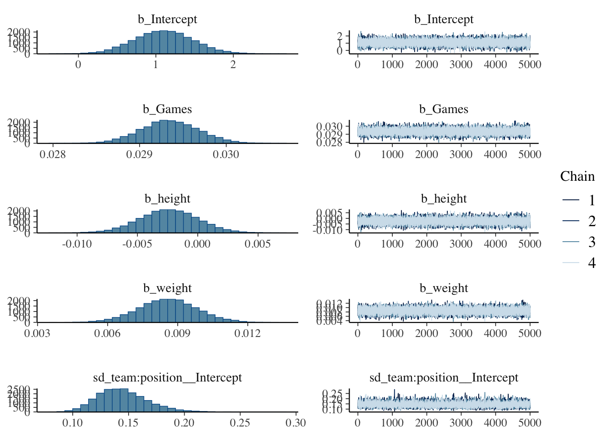
A standard model-check is the posterior predictive check: draw datasets from the fitted model and compare them visually to the observed data. bayesplot::pp_check() overlays a sample of model-generated densities on the data. Here the fit at very low hit counts is imperfect, which suggests room for improvement.
pp_check(model_hit, ndraws = 100)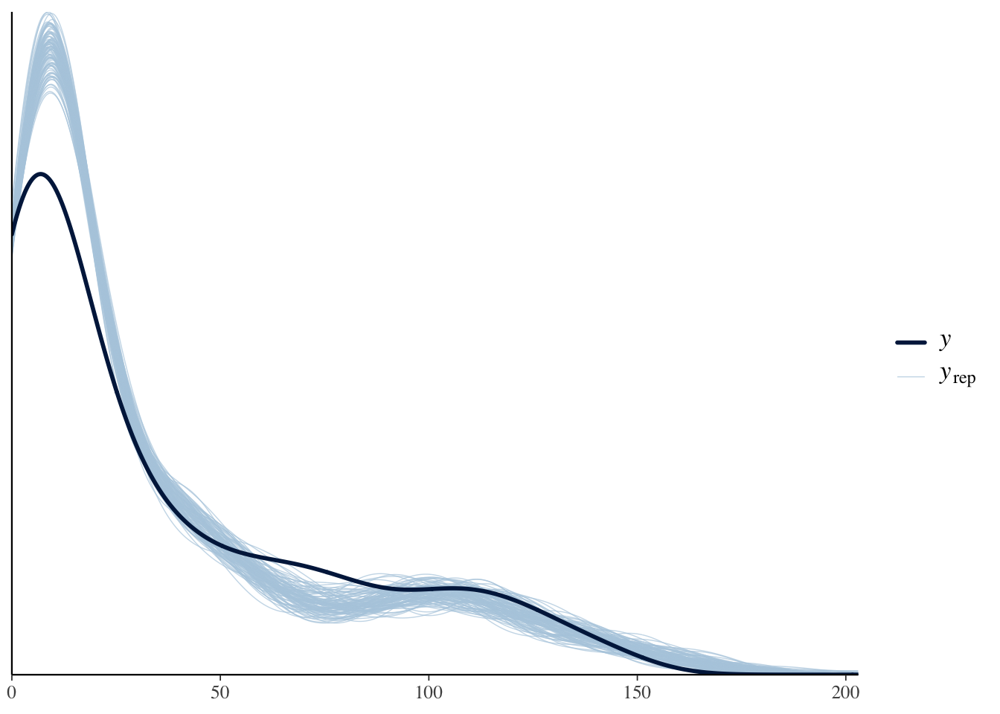
Finally, a per-group plot. The fine adjustments across teams and positions can be seen to track the data well.
predicted_hit <- fitted(model_hit,
newdata = dat,
allow_new_levels = TRUE
) %>% as.data.frame()
plot_data <- data.frame(
observed = dat$Hit,
predicted = predicted_hit$Estimate,
team = dat$team,
position = dat$position
)
ggplot(plot_data, aes(x = observed, y = predicted, color = team)) +
geom_point(alpha = 0.7, size = 2) +
geom_abline(slope = 1, intercept = 0, color = "red", linetype = "dashed") +
labs(
x = "Observed Hit", y = "Predicted Hit",
title = "Predicted vs Observed Hit count (2020 season)",
color = "Team"
) +
facet_wrap(team ~ position, scales = "free") +
theme_minimal() +
theme(legend.position = "bottom")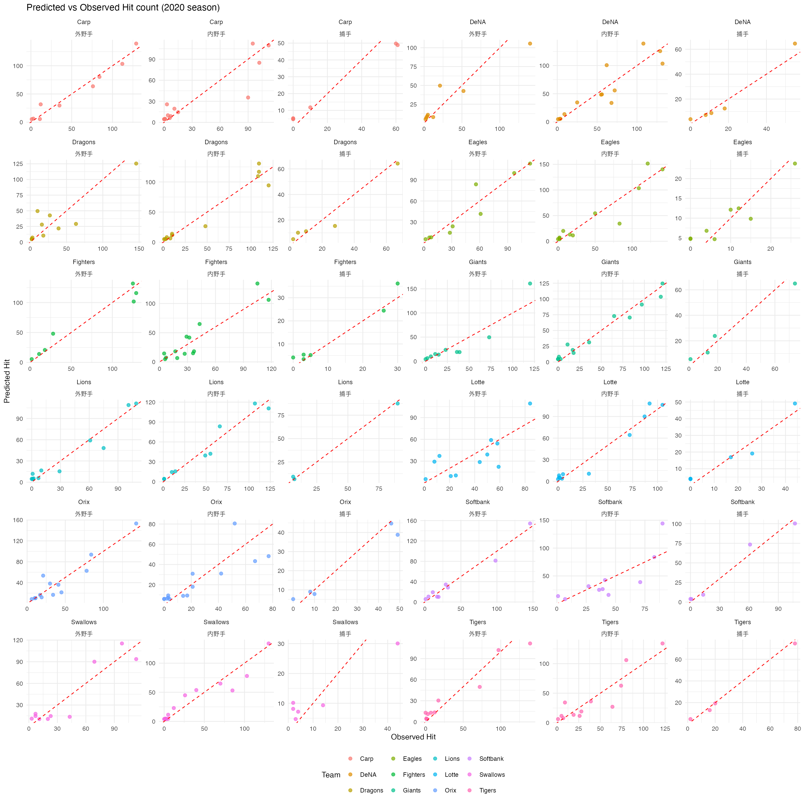
14.5 Exercises
14.5.1 Basic problems: parameter recovery
Using brms, practise parameter recovery for Bayesian models — confirming that the parameters used to generate the data can be recovered by fitting.
14.5.1.1 1-1: Logistic regression
# parameter recovery for logistic regression
# Step 1: generate data from known parameters
set.seed(123)
n <- 200
true_intercept <- 0.5
true_slope <- 1.2
x <- rnorm(n, mean = 0, sd = 1)
p <- plogis(true_intercept + true_slope * x)
y <- rbinom(n, size = 1, prob = p)
df_logistic <- data.frame(x = x, y = y)
# Step 2: fit with brms
model_logistic <- brm(
y ~ x,
family = bernoulli(),
data = df_logistic,
prior = c(
prior(normal(0, 2.5), class = Intercept),
prior(normal(0, 2.5), class = b)
),
chains = 4,
iter = 2000,
cores = 4,
refresh = 0
)
# Step 3: inspect
summary(model_logistic)
plot(model_logistic)
# Step 4: recovery assessment
posterior_summary(model_logistic)Question. Run the code above. Confirm that the true intercept (0.5) and slope (1.2) are recovered, and that the 95% credible intervals of the posteriors contain the true values.
14.5.1.2 1-2: Poisson regression
# parameter recovery for Poisson regression
set.seed(456)
n <- 300
true_intercept <- 1.0
true_slope <- 0.8
x <- runif(n, min = 0, max = 3)
lambda <- exp(true_intercept + true_slope * x)
y <- rpois(n, lambda = lambda)
df_poisson <- data.frame(x = x, y = y)
model_poisson <- brm(
y ~ x,
family = poisson(),
data = df_poisson,
prior = c(
prior(normal(0, 2.5), class = Intercept),
prior(normal(0, 2.5), class = b)
),
chains = 4,
iter = 2000,
cores = 4,
refresh = 0
)
summary(model_poisson)
plot(model_poisson)Question. Confirm that the true intercept (1.0) and slope (0.8) are recovered.
14.5.2 Applied problem: hierarchical modelling on the baseball data
Using Baseball.csv, build hierarchical models nested by year and team. Restrict to the 2018–2020 seasons and to pitchers. The relevant variables include salary, height, and weight, together with pitching performance metrics — wins (Win), losses (Lose), holds (Hold), and saves (Save).
dat <- read_csv("Baseball.csv") %>%
filter(Year %in% c("2018年度", "2019年度", "2020年度")) %>%
filter(position == "投手") %>%
filter(!is.na(Win), !is.na(Lose), !is.na(Games), !is.na(salary),
!is.na(height), !is.na(weight)) %>%
mutate(
Year = as.factor(Year),
team = as.factor(team)
)14.5.2.1 Model A: Poisson regression
Run the model below.
model1 <- brm(
Win ~ height + weight + Games + (1 | team) + (1 | Year),
family = poisson(),
data = dat,
iter = 2000,
cores = 4
)Question 1. Describe the model structure, addressing:
- the response variable and its probability distribution;
- the meaning of each fixed effect (predictor);
- the meaning of the random effects (hierarchical structure);
- why this probability distribution was chosen.
Question 2. Interpret the results, addressing:
- the meaning and statistical significance of each fixed-effect coefficient;
- the magnitude of the random-effects variances and what they imply.
Question 3. Produce the following visualisations:
- MCMC convergence diagnostics via
plot(model1); - a posterior predictive check via
pp_check(model1); - predicted-vs-observed plots by team and by year.
14.5.2.2 Model B: log-normal model
Run the model below.
model2 <- brm(
log(salary) ~ Win + Lose + (1 + Games | team) + (1 | Year),
family = gaussian(),
data = dat,
iter = 2000,
cores = 4
)Question 1. Describe the model structure, addressing:
- why the response is log-transformed;
- the economic interpretation of the Win and Lose fixed effects;
- the meaning of the random-effects structure (random intercept and random slope).
Question 2. Interpret the results, addressing:
- the effects of wins and losses on salary (as percentage changes);
- the cross-team salary disparities and differences in the Games effect;
- the magnitude of the year effects and their economic interpretation.
Question 3. Produce the following visualisations:
- MCMC convergence diagnostics via
plot(model2); - per-team differences in the Games effect;
- a scatter plot of actual versus predicted salary.
To offer an excuse: the statistical and computing toolkit of that era was much thinner than today’s, and even when theoretical impropriety was acknowledged, there was little users could do about it. Psychology also measures only rough surrogates for invisible mental quantities, and there is a folk argument that, given the more fundamental problems with the data themselves, statistical-assumption violations are a minor matter. That climate may be part of how the practice persisted.↩︎
In English, “general linear model” vs. “generalised linear model” differs by -ised; that one-letter difference is easier to track than the analogous Japanese pair (一般 vs. 一般化), so we use the English distinction.↩︎
More precisely, the test statistic is the ratio of the mean squares (sum of squares divided by degrees of freedom).↩︎
A common rule of thumb is 0.05 (small), 0.10 (medium), 0.15 (large) — see Raudenbush and Liu.X (2000).↩︎